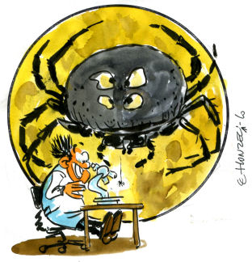

Ouragans, Inondations, Sécheresses etc.. : Les calamités
(billet le plus récent, le 21/06/2011)On vous répète partout que les pires calamités vont agresser notre pauvre planète. A les en croire, les dix plaies d'Egypte ne seraient que des broutilles à côté de ce qui nous attend du fait du réchauffement climatique anthropique...
En attendant les pluies grenouilles et de sauterelles, et devant le foisonnement actuel de discours de plus en plus alarmistes qui attribuent désormais tout ce qui nous arrive, absolument tout, au CO2 que nous expédions inconsidérément dans l'atmosphère, j'ai décidé d'ouvrir cette page, pour ramener les choses à des proportions plus raisonnables. Comme vous allez le voir, de nombreuses déclarations contredisent carrément les données de la Science. Je compléterai cette page au fur et à mesure de mes trouvailles, comme à l'accoutumé.Cette page est donc à rapprocher de celle sur les océans, qui est plus spécialisée. Mais l'esprit en est exactement le même : Débusquer, en s'appuyant sur des articles scientifiques, autant que possible, incontestables, les exagérations infondées et péremptoires dont les médias, les écologistes, Al Gore etc. nous rebattent quotidiennement les oreilles.
Bien entendu, j'aurais bien du mal à démentir certaines affirmations qui nous disent que le réchauffement climatique énerve les souris, rend les cougars plus agressifs, altère votre sexualité et provoque l'écroulement d'un pont sur le Mississipi comme cela a été affirmé dans les médias, mais il existe, heureusement, des sujets sur lesquels la Science a déjà parlé. Et il est toujours préférable de se référer aux articles et aux données scientifiques plutôt qu'aux déclarations péremptoires de certains. N'est-ce pas ?
21 Juin 2011 : En réalité, la pluviosité au Zimbabwe (et dans d'autres régions d'Afrique), n'a pas varié depuis, au moins, 100 ans.
Pour ce qui est de l'Afrique de l'Ouest, les variations de pluviosité sont dans le domaine des fluctuations naturelles.Tels sont les résultats, soigneusement étayés, d'études publiées récemment dans des revues scientifiques revues par les pairs.
Dans l'esprit du billet du 12 Juin (ci-dessous) qui concernait l'augmentation supposée du nombre des cyclones dans l'Atlantique Nord, voici encore une nouvelle rassurante qui dément les affirmations contenues dans le dernier rapport du GIEC (AR4, 2007) fréquemment reprises par les médias. Je vous les rappelle :GIEC AR4 ( Changement Climatique 2007 : Groupe de travail I (Les bases)(*)
"Long-term trends from 1900 to 2005 have been observed in precipitation amount over many large regions.[11] Significantly increased precipitation has been observed in eastern parts of North and South America, northern Europe and northern and central Asia. Drying has been observed in the Sahel, the Mediterranean, southern Africa and parts of southern Asia [....][11] {3.3, 3.9}"
Soit, en français :
'Des tendances à long terme, de 1900 à 2005, ont été observées pour ce qui concerne la pluviosité dans beaucoup de très grandes régions. [11] Un accroissement significatif a été observé dans les zones situées à l'Est de l'Amérique du Nord et du Sud, dans le Nord de l'Europe ainsi qu'au Nord et au Centre de l'Asie. Un dessèchement a été observé au Sahel, dans la zone Méditerranéenne, dans le Sud de l'Afrique et dans des parties du Sud de l'Asie. [....][11]"
______________________________________________________________
Voici l'article en question qui contredit les affirmations précédentes :
"Etude des variations temporelles de la pluviosité annuelle au Zimbabwe"
"Investigating changes over time of annual rainfall in Zimbabwe"
Publié le 22 Déc. 2010 dans Hydrol. Earth Syst. Sci., 14, 2671–2679, 2010
par D. Mazvimavi
de l'"Institute for Water Studies, University of the Western Cape, South Africa"
Voici le résumé de cet article, suivi d'une traduction en français :
_________________________________________________________________________
Abstract. There is increasing concern in southern Africa about the possible decline of rainfall as a result of global warming. Some studies concluded that average rainfall in Zimbabwe had declined by 10% or 100mm during the last 100 years. This paper investigates the validity of the assumption that rainfall is declining in Zimbabwe. Time series of annual rainfall, and total rainfall for (a) the early part of the rainy season, October-November-December (OND), and (b) the mid to end of the rainy season, January-February- March (JFM) are analysed for the presence of trends using the Mann-Kendall test, and for the decline or increase during years with either high or low rainfall using quantile regression analysis. The Pettitt test has also been utilized to examine the possible existence of change or break-points in the rainfall time series. The analysis has been done for 40 rainfall stations with records starting during the 1892–1940 period and ending in 2000, and representative of all the rainfall regions.
The Mann-Kendal test did not identify a significant trend at all the 40 stations, and therefore there is no proof that the average rainfall at each of these stations has changed. Quantile regression analysis revealed a decline in annual rainfall less than the tenth percentile at only one station, and increasing of rainfall greater than the ninetieth percentile at another station. All the other stations had no changes over time in both the low and high rainfall at the annual interval. Climate change effects are therefore not yet statistically significant within time series of total seasonal and annual rainfall in Zimbabwe. The general perception about declining rainfall is likely due to the presence of multidecadal variability characterized by bunching of years with above (e.g. 1951–1958, 1973–1980) and below (e.g. 1959–1972, 1982–1994 ) average rainfall.Résumé : "Il existe une inquiétude grandissante dans la zone Sud de l'Afrique au sujet d'un possible déclin de la pluviosité considéré comme résultant du réchauffement climatique. Quelques études ont conclu que la pluviométrie moyenne au Zimbabwe a baissé de 10% ou 100 mm durant les cents dernières années. Cet article étudie la validité de la supposition que la pluviométrie décroît au Zimbabwe. Les séries temporelles de la pluviosité annuelle pour a) le début de la saison des pluies soit Octobre-Novembre-Décembre (OND), et b) de la moitié à la fin de la saison des pluies soit Janvier-Février-Mars (JFM) sont analysées pour découvrir la présence de tendances en utilisant le test de Mann-Kendall et pour étudier le déclin ou la croissance avec une forte ou faible pluviométrie en utilisant une analyse de régression de quantiles. Le test de Pettitt a aussi été utilisé pour examiner l'existence possible de changements ou de points de rupture dans les séries temporelles de pluviométrie. L'analyse a été effectuée pour 40 stations qui mesurent la pluviosité et qui ont des enregistrements qui commencent durant la période 1892-1940 et qui se terminent en 2000 et qui sont représentatives de toutes les régions pluvieuses. Le test de Mann-Kendall n'a décelé aucune tendance significative pour toutes les 40 stations et, ainsi, il n'existe aucune preuve que la pluviosité moyenne au niveau de ces stations a changé. L'analyse de régression des quantiles a révélé un déclin de la pluviosité annuelle inférieure au dixième percentile dans seulement une station et une augmentation de pluviosité plus grande que le neuvième percentile dans une autre station. Toutes les autres stations ne montrent aucun changement temporel à la fois pendant les époques de forte et de faible pluviosité dans l'intervalle annuel. Les effets du changement climatique ne sont donc pas encore statistiquement significatifs dans les séries temporelles de la pluviosité totale aussi bien saisonnière qu'annuelle au Zimbabwe. La perception généralisée d'une décroissance de la pluviosité est probablement due à la présence de la variabilité multidécennale caractérisée par un regroupement des années avec des pluviosités au dessus ( par exemple 1959-1972) et au dessous (par exemple 1982-1994) de la pluviosité moyenne."
__________________________________________________________________________Notes : Le test de Mann-Kendall est une technique fréquemment utilisée en statistique afin de déterminer si une tendance est identifiable dans une série temporelle. A noter que les travaux du Mann de ce test datent de 1945. Il n'a évidemment rien à voir avec le Michael Mann souvent cité dans ce site, notamment à propos de la crosse de hockey.
Le test de Pettitt est une technique utilisée en statistique destinée à s'assurer de l'homogénéité d'une série de données. C'est un test propre à détecter les cassures dans les données ou les discontinuités brutales.
L'analyse des percentiles (anglicisme souvent utilisé. Les français utilisent les mots quantiles, centiles, déciles etc.) permet d'étudier avec précision la forme d'une distribution statistique (par exemple gaussienne), en divisant l'axe des abscisses en N parties égales et en relevant les ordonnées correspondantes.
__________________________________________________________________________Je rappelle que le Zimbabwe (ex Rhodésie du Sud) est un pays, sans frontière maritime, situé au Sud Est de l'Afrique entre le Botswana, l'Afrique du Sud, la Zambie et le Mozambique.
Voici la Figure 1 de l'article, accompagnée de sa légende.
Figure 1: "Situation des 40 stations de mesure sélectionnées pour l'analyse et l'étude des variations spatiales de la pluviosité annuelle au Zimbabwe."
Comme vous les voyez, la pluviosité est extrêmement variable, selon la région considérée au Zimbabwe. Elle va de 3m d'eau par an à 400 mm/d'eau par an
L'article, relativement copieux, examine avec beaucoup de soin et en utilisant les techniques statistiques modernes, la totalité des séries temporelles de pluviométrie relevées dans les 40 stations, considérées comme fiables, indiquées ci-dessus. Il est évidemment impossible (et interdit, ces articles sont payants) de reproduire in extenso, ou même en grande partie, les résultats des analyses statistiques effectuées par l'auteur.
Cependant et entre autres graphiques et tableaux intéressants, D. Mazvimavi nous propose la figure suivante destinée à expliquer, au moins en partie, pour quelle raison l'idée d'un accroissement progressif de la sécheresse s'est installée parmi les spécialistes qui suivent ces questions de près.Fig. 5. "Analyse de la tendance de la pluviosité annuelle au Zimbabwe pour les périodes 1933–1992 et 1933–2000. La tendance de la période 1933–1992 est donnée par Y = 772.6–1.01 X (r2 = 0.01) tandis que celle de la période 1933– 2000 est donnée par Y = 729.8–0.20 X (r2 = 0.0)."
C'est un exemple frappant que donne l'auteur de l'article, pour illustrer une des difficultés majeures (pour ne pas dire une plaie) de l'analyse des données climatologiques.
En clair, si on se limite aux données accessibles jusqu'en 1993, on trouve que la pluviosité décroît avec une pente de -1,01 ce qui peut sembler alarmant et qui rentre dans le domaine statistiquement significatif.Mais si on inclut les données supplémentaires disponibles, allant jusqu'en 2000, on trouve que la pente est divisée par un facteur cinq, indiquant une absence de variation statistiquement significative. En réalité, il suffit de quelques années consécutives avec une pluviosité normale ou supérieure à la normale, pour que la conclusion et l'alarmisme soient sérieusement tempérés. C'est très exactement ce qui s'est produit.
De manière générale et comme je l'ai déjà fait remarquer à propos de l'analyse des variations de température, il suffit de bien choisir ses points d'arrivée et de départ, pour donner l'illusion qu'un observable augmente ou diminue... selon ce que l'on cherche à démontrer. Par exemple, dans le cas de la figure ci-contre, on aurait également pu affirmer que la pluviosité a beaucoup augmenté au Zimbabwe, si on était parti du début des années 80.
C'est un "trick", un "truc", malheureusement très fréquemment pratiqué par les médias et la quasi totalité des activistes (scientifiques ou non). Le lecteur peu informé, le plus souvent, n'y voit que du feu.
D'autre part et en réalité, la plupart des signaux sont extrêmement "bruités" et les tendances sont très faibles. Il serait donc sage d'éviter de tirer des conclusions hâtives ou excessivement alarmistes à partir de l'observation de faibles variations qui peuvent être démenties dans les quelques années suivantes.
Pierre Morel, le fondateur du LMD, y faisait allusion en parlant, à juste titre, de "scrutation obsessionnelle des diagrammes"...4 Extraits des conclusions de l'article :
______________________________________________________________
Rainfall records for the 1892 to 2000 period at 40 stations in Zimbabwe do not demonstrate evidence of changes in the median, high or low rainfall during the beginning (October to December), mid-to-end (January to March) of the rainy season, and for the whole year. The very few stations which had evidence of changes of the median and some percentiles were located in different parts of the country, which is an indication that the changes identified are not likely to be physically significant but could be due to changes of the exposure of rain gauges, e.g. increase in the built up area over time. Effects of global warming on rainfall that may have occurred are not yet statistically identifiable within the available rainfall time series. Other studies in Africa and Zimbabwe (New et al., 2006; Conway et al., 2008; Aguilar et al., 2009) made the same conclusion."..."Les données de pluviométrie pour la période 1892 à 2000, issues de 40 stations au Zimbabwe, n'apportent aucun élément de preuve indiquant des changements dans les pluviosités moyennes, fortes ou faibles depuis le début (Octobre à Décembre) jusqu'à la fin (Janvier à Mars) de la saison des pluies, et pour toute l'année. Le très petit nombre de stations qui montrent des changements de la valeur moyenne de quelques percentiles étaient situées dans différentes parties du pays ce qui est une indication que les changements détectés ne sont probablement pas significatifs du point de vue physique mais pourraient être dus à des variations de l'exposition des jauges de pluviométrie, par exemple du fait des constructions en augmentation dans la zone, au cours du temps. Les effets du réchauffement climatique sur la pluviosité ne sont pas encore statistiquement identifiables dans les séries temporelles de pluviométrie disponibles. D'autres études en Afrique et au Zimbabwe (New et al., 2006; Conway et al., 2008; Aguilar et al., 2009) sont parvenues aux mêmes conclusions."...
_______________________________________________________________A noter que l'étude de News et al concernait 14 pays du Sud et de l'Ouest de l'Afrique. Celle de Conway concernait l'Afrique Sub-Saharienne et celle d'Aguilar et al, l'Afrique Centrale, la Guinée Conakry et le Zimbabwe.
...Un peu plus loin, l'auteur fait cette remarque pertinente :
_______________________________________________________________
The results of this study show that the long-term average input of rainfall into the land phase of the hydrological system has not changed. However, anthropogenic changes of land use and land cover, accelerated soil erosion resulting in increased siltation rates have in some cases adversely affected the available water resources (Schulze, 2000). These adverse effects are sometimes erroneously attributed to the decline of rainfall. Human and livestock populations in southern Africa increased tremendously during the twentieth century, but with no commensurate increase in resilience against droughts and floods. Consequently, the numbers of people and livestock adversely affected by droughts and floods have been increasing which is again perceived as evidence for increasing frequency and severity of droughts. The perception about gradual desiccation can also be a symptom of an environmental nostalgia resulting in the past being considered to have been wetter than the current period...Soit:
"Les résultats de cette étude montrent que la moyenne à long terme de la contribution pluviométrique à la phase terrestre du système hydrologique, n'a pas changé. Cependant, les changements anthropiques de l'utilisation et de la couverture des sols qui ont accéléré l'érosion des sols en entraînant une augmentation des taux d'envasement, ont, dans quelques cas, affecté la disponibilité en ressources hydriques (Schultz, 2000). Ces effets négatifs sont parfois attribués, de manière erronée, à la décroissance de la pluviosité. Les populations humaines et les troupeaux dans la zone Sud de l'Afrique ont énormément augmenté pendant le XXème siècle, mais ceci sans commune mesure avec l'augmentation de la résilience envers les sécheresses et les inondations. En conséquence, la population humaine et les troupeaux qui ont été affectés par les sécheresses et les inondations ont augmenté ce qui est perçu comme une évidence pour une augmentation de la fréquence et de la sévérité des sécheresses. La perception d'un dessèchement progressif peut aussi être un symptôme d'une nostalgie environnementale du passé qui est considéré comme ayant été plus humide que la période actuelle."
_______________________________________________________________Ceci est une observation intéressante qui met le doigt sur un problème crucial : Il s'agit de l'évolution des pratiques de l'élevage et de l'utilisation des sols en Afrique ainsi que de la perception humaine face aux difficultés rencontrées, c'est à dire sur la tendance néfaste et désormais généralisée, sinon encouragée, de tout mettre sur le compte du "changement ou du réchauffement climatique" alors que les causes véritables des problèmes sont ailleurs.
On constate ainsi que le "changement climatique" prôné par le GIEC, sert, en réalité, d'alibi pour beaucoup de responsables des pays en voie de développement qui fréquentent assiduement les couloirs de l'ONU (UNEP). Il leur permet de ne pas se poser les questions délicates et fondamentales sur l'évolution délétère des pratiques de l'utilisation des sols dans leurs propres pays et, ainsi, de ne pas chercher à les résoudre (à quelques exceptions près, comme au Sahel). En ce sens, les rapports du GIEC, tel que l'AR4 de 2007, jouent un rôle véritablement toxique.
Les conséquences de ces comportements inadaptés ne sont pas anodines. Elles entraînent la paupérisation et la malnutrition de millions d'habitants de ces contrées déjà peu favorisées.
_________________________________________________________________
Note : Concernant l'Ouest de l'Afrique, le 17Avril 2009, était paru dans le journal Science (Vol 324) un article intitulé :
"Forçage atlantique de la sécheresse persistante dans l'Afrique de l'Ouest"
T. M. Shanahan, J. T. Overpeck, K. J. Anchukaitis, J. W. Beck, J. E. Cole, D. L. Dettman,J. A. Peck,C. A. Scholz, J. W. King
Le résumé de cet article qui concernait l'analyse et le décompte des sécheresses durant les trois derniers millénaires, s'achevait sur le constat suivant.[...]"We find that intervals of severe drought lasting for periods ranging from decades to centuries are characteristic of the monsoon and are linked to natural variations in Atlantic temperatures. Thus the severe drought of recent decades is not anomalous in the context of the past three millennia, indicating that the monsoon is capable of longer and more severe future droughts."
Soit :
"Nous trouvons que des intervalles de sécheresses sévères qui se prolongent pendant des périodes allant de décennies aux siècles, sont caractéristiques de la mousson et sont liées aux variations naturelles des températures de l'Atlantique. Ainsi, la sécheresse sévère des dernières décennies n'est pas anormale dans le contexte des trois derniers millénaires qui montrent que la mousson est capable de générer des sécheresses futures plus longues et plus sévères."
Il existe (encore) des variations reconnues comme naturelles.
C'est assez rassurant et plutôt rare dans le contexte actuel.
(*) Note : Dans la même section du rapport AR4 du GIEC, vous trouverez cette note importante, un peu hors-sujet mais qui vaut la peine d'être mentionnée ici :
"A decrease in diurnal temperature range (DTR) was reported in the TAR, but the data available then extended only from 1950 to 1993. Updated observations reveal that DTR has not changed from 1979 to 2004 as both day- and night-time temperature have risen at about the same rate. The trends are highly variable from one region to another. {3.2}"
Soit : " Une décroissance de l'extension de la différence des températures Jour/Nuit (DTR = Diurnal Temperature Range) avait été rapportée dans le TAR ( Ndt : le rapport du GIEC précédent l'AR4), mais les données disponibles ne recouvraient que la période allant de 1950 à 1993. Les observations remises à jour révèlent que le DTR n'a pas changé de 1979 à 2004 car les deux températures diurnes et nocturnes se sont élevées, à peu près, au même rythme. Les tendances sont fortement variables d'une région à l'autre (3.2)."De fait, cette note est importante parce que beaucoup considéraient que la diminution de la différence des températures entre le jour et la nuit (le DTR), constituait une preuve (irréfutable, affirmaient-ils) de l'augmentation progressive de l'effet de serre. Et effectivement, on pourrait s'attendre à ce que l'augmentation de l'effet de serre pousse davantage les températures nocturnes à la hausse que les températures diurnes, diminuant ainsi le DTR.
Comme le reconnaît honnêtement le GIEC, ce n'est pas ce qui est observé.
Mais cela n'a guère incité ceux qui défendaient (et défendent encore) ce genre d'argument à la résipiscence.
Il faudra qu'ils trouvent autre chose.A suivre... Nous verrons les conclusions qui en seront tirées dans le prochain rapport AR5 du GIEC !
12 Juin 2011 : L'augmentation du nombre des cyclones dans l'Atlantique Nord, revendiquée par le GIEC et certains auteurs, reposerait, en réalité, sur un artefact résultant de l'amélioration progressive des techniques d'observation et non pas d'une évolution réelle des conditions climatiques.
Telle est la conclusion d'un article, publié tout récemment dans le Journal of Geophysical Research.
Cet article, signé par trois spécialistes de la question travaillant à Princeton (NJ-USA), remet gravement en question, et entre autres, les conclusions du GIEC (rapport AR4-2007), telles qu'on peut les lire dans le dernier rapport du GIEC.
Voici l'extrait pertinent (page 9) tiré du Résumé pour les Décideurs (SPM) du rapport du GIEC, AR4 de 2007:
___________________________________"There is observational evidence for an increase in intense tropical cyclone activity in the North Atlantic since about 1970, correlated with increases of tropical sea surface temperatures. There are also suggestions of increased intense tropical cyclone activity in some other regions where concerns over data quality are greater. Multi-decadal variability and the quality of the tropical cyclone records prior to routine satellite observations in about 1970 complicate the detection of long-term trends in tropical cyclone activity. There is no clear trend in the annual numbers of tropical cyclones. {3.8}"
en français :"Il existe des observations prouvant une augmentation de l'activité des cyclones tropicaux intenses dans l'Atlantique Nord depuis environ 1970, corrélée avec une augmentation des températures de surface des mers tropicales. Il y a aussi des suggestions d'une augmentation de l'activité des cyclones tropicaux intenses dans quelques autres régions pour lesquelles des soucis sur la qualité des données sont plus importants. La variabilité multi-décennale et la qualité des données sur les cyclones tropicaux précédant les observations satellitaires dans les années 1970, compliquent la détection de l'évolution à long terme de l'activité des cyclones tropicaux. Il n'y a pas de tendance claire dans les données annuelles des cyclones tropicaux.(3.8)"
______________________________________________Si le GIEC reconnaît (honnêtement) qu'il n'y a pas de tendance claire dans les données annuelles globales de l'activité cyclonique tropicale, celui-ci affirme néanmoins, en se basant en particulier sur les travaux de Michael Mann (célèbre notamment pour la fameuse "crosse de hockey") et de ses collègues, qu'il existe une augmentation de l'activité des cyclones tropicaux dans l'Atlantique Nord, depuis environ 1970.
Il faut se souvenir que la question de l'augmentation (ou non) de l'activité cyclonique globale ou locale, est un sujet qui a, depuis plusieurs années, fait l'objet de nombreuses polémiques ainsi que je l'ai rapporté dans plusieurs billets antérieurs (tels que celui-ci) . Souvenons nous également que les affirmations de certains chercheurs proches du GIEC, tels que Kevin Trenberth (un des protagonistes du Climategate ), au sujet des ouragans et des cyclones, avaient provoqué la démission fracassante du GIEC de Christopher Landsea qui est un des leaders incontestables de ce domaine de recherche. La lettre de Landsea se terminait par ces quelques mots cinglants que beaucoup semblent avoir oubliés :
" Pour ce qui me concerne, je ne peux pas, en toute honnêteté, continuer à contribuer à un processus que je considère comme motivé par des objectifs pré-conçus et qui sont scientifiquement infondés. Comme les responsables du GIEC n'ont rien trouvé de mal dans les actions du Dr. Trenberth et l'ont maintenu à son poste d'Auteur Principal pour l'AR4, j'ai décidé de ne plus participer à la préparation de l'AR4 du GIEC."
De fait de nombreux articles, tels que celui que j'avais analysé dans ce billet , publiés dans les meilleures revues, ont effectivement précisé qu'il n'y avait aucune tendance décelable dans l'évolution des ouragans ou des cyclones tropicaux depuis plus d'un siècle. Le fait que certains chercheurs aient rapporté des observations indiquant une augmentation du nombre de cyclones tropicaux dans l'Atlantique Nord représente donc une sorte d'anomalie par rapport aux observations effectuées, à l'échelle globale, en utilisant différents métriques (où méthodes de quantification).Cette question de la métrique ( la méthode de quantification) choisie joue un rôle central dans l'analyse de l'article que je donne ci-dessous.
Voici donc quelques rappels à ce sujet :
Note : Différentes métriques pour quantifier l'activité cyclonique:
L'indice ACE (Accumulated Cyclone Energy) qui est proportionnel à l'énergie cinétique accumulée par tous les cyclones (c'est à dire proportionnelle au carré de la vitesse du vent) observés pendant une période donnée est notamment utilisé par Ryan Maue. Cette métrique, parfaitement logique, tend à s'imposer parmi les experts.
Pour sa part, K. Emmanuel (expert du MIT) avait défini, en 2005, un indice différent, quoiqu'assez proche de l'ACE, appelé PDI (Power Dissipation Index. Détails ici).
Les auteurs de l'article mentionné dans le billet qui date de Déc. 2010, avaient, pour leur part, choisi d'utiliser le nombre de journées de tempêtes comme métrique. Une tempête (ou cyclone ou ouragan) n'étant comptabilisée que lorsque la vitesse du vent est au moins égale à 20 noeuds, c'est à dire, à environ 36 km/h.L'utilisation de ces trois métriques relève de la logique car elles prennent toutes trois en compte la puissance, ou l'énergie développée par les ouragans. Les deux premières en tenant compte de la vitesse du vent. La dernière en définissant un seuil en dessous duquel, une tempête ne peut être prise en compte si la vitesse du vent est insuffisante et, surtout, en prenant en compte le temps de vie des cyclones.
La métrique utilisée par les auteurs des articles qui ont, entre autres, servi de base à la rédaction du rapport du GIEC, est on ne peut plus simple : Il s'agit tout simplement de dénombrer, c'est à dire de compter, le nombre des tempêtes tropicales (en l'occurrence, dans l'Atlantique Nord) observées. Malheureusement, comme vous allez le voir, le choix de cette métrique se révèle aussi fragile que fallacieux, pour ne pas dire tendancieux. De fait, il donne le champ libre aux affirmations tout aussi alarmistes que sans fondement scientifique.
A titre d'exemple, voici ci-contre, la couverture d'un récent livre d'Al Gore dans lequel l'Ex-Vice-Président US mentionne la (soi-disant) "augmentation de l'activité cyclonique" qu'en réalité... on n'a pas observée, ni à l'échelle du globe, ni dans l'Atlantique Nord comme le montrent les auteurs de l'article analysé ci-dessous.L'article qui vient de paraître et qui analyse et fait le point sur cette question.
J'insiste sur le fait que l'article suivant ne concerne que l'Atlantique Nord.
Comme nous le savons, et comme le reconnaît le GIEC, les données globales ne montrent aucune tendance nette, ainsi qu'on peut l'observer sur le tout dernier diagramme ACE (Energie cyclonique accumulée, global et Hémisphère Nord) mis en jour à la fin du mois de mai dernier :
Nous allons voir que bien que s'exprimant dans le langage mesuré des scientifiques, les auteurs de l'étude que je vais vous décrire, n'utilisent pas la langue de bois et ne mâchent pas leurs mots. Voici les références de l'article qui est paru le 26 mai 2011 :
J. Geophys. Res., 116, D10114, doi:10.1029/2010JD015493.
"Is the recorded increase in short‐duration North Atlantic tropical storms spurious?"
"L'augmentation rapportée des tempêtes de courte durée dans l'Atlantique Nord est-elle fallacieuse ?"
Gabriele Villarini,1,2 Gabriel A. Vecchi,3 Thomas R. Knutson,3 (photo ci-contre) et James A. Smith1
publié le 26 Mai 2011.1Department of Civil and Environmental Engineering, Princeton University, Princeton, New Jersey, USA.
2Willis Research Network, London, UK.
3Geophysical Fluid Dynamics Laboratory, NOAA, Princeton, New Jersey, USA.Voici, comme à l'accoutumée, le résumé original suivi d'une traduction en français :
________________________________________________________
Abstract : [1] The number of North Atlantic tropical storms lasting 2 days or less exhibits a large increase starting from the middle of the 20th century, driving the increase in recorded number of tropical storms over the past century. Here we present a set of quantitative analyses to assess whether this behavior is more likely associated with climate variability/ change or with changes in observing systems. By using statistical methods combined with the current understanding of the physical processes, we are unable to find support for the hypothesis that the century‐scale record of short‐lived tropical cyclones in the Atlantic contains a detectable real climate signal. Therefore, we interpret the long‐term secular increase in short‐duration North Atlantic tropical storms as likely to be substantially inflated by observing system changes over time. These results strongly suggest that studies examining the frequency of North Atlantic tropical storms over the historical era (between the 19th century and present) should focus on storms of duration greater than about 2 days.Résumé : "Le nombre des tempêtes tropicales dans l'Atlantique Nord dont la durée est égale à 2 jours ou moins, montre une forte augmentation qui part du milieu du XXème siècle, déterminant l'augmentation apparente du nombre de tempêtes tropicales lors du siècle dernier. Dans cet article nous présentons une série d'analyses quantitatives destinées à déterminer si cette tendance est plus probablement associée à une évolution de la variabilité climatique ou à des changements des systèmes d'observation. En utilisant des méthodes statistiques combinées avec la compréhension actuelle des processus physiques, nous sommes dans l'incapacité de trouver un soutien pour l'hypothèse que les données, à l'échelle du siècle, sur les tempêtes tropicales de courte durée dans l'Atlantique, contiennent un signal climatique réel et détectable. C'est pourquoi nous interprétons l'augmentation à long terme des tempêtes tropicales de l'Atlantique Nord comme issue de données probablement substantiellement gonflées par les changements des systèmes d'observation au cours du temps. Ces résultats suggèrent fortement que les études qui examinent la fréquence des tempêtes tropicales dans l'Atlantique Nord sur des périodes historiques (entre le XIXème siècle et le présent) se limitent aux tempêtes des durées supérieures à environ 2 jours."
________________________________________________________Ce résumé est parfaitement illustré par la figure suivante extraite de l'article :
.
Voici la traduction de la légende de cette figure en deux parties qui constitue, à elle seule, un réquisitoire sévère contre la technique utilisée par les chercheurs proches du GIEC.
"Figure 1. Séries temporelles du nombre des tempêtes tropicales dans l'Atlantique Nord durant deux jours ou moins (grahique supérieur) et durant plus de deux jours (graphique inférieur, données corrigées selon Landsea et al [2010])."
.
Les chercheurs de Princeton, auteurs de cet article, ont tout d'abord séparé les observations des cyclones de courte durée (les "shorties" comme les appellent les auteurs de l'article), c'est à dire qui ont duré deux jours au plus, de celles qui concernent les cyclones de plus longue durée.
Comme on peut l'observer immédiatement, l'évolution du nombre des cyclones de longue durée (supérieure à deux jours) dans l'Atlantique Nord ne montre aucune tendance depuis 1880 jusqu'à nos jours.
Par contre, le nombre de cyclones de courte durée (inférieure ou égale à deux jours) aurait, selon ce graphique, subi une croissance apparente très nette durant la même période.
Il est évident que les cyclones (ouragans, tempêtes) tropicaux de longue durée ont bénéficié, tout au long du siècle dernier et jusqu'à présent, d'une scrutation attentive, évidemment facilitée par le fait qu'une longue durée permet un suivi méticuleux, même avec des moyens d'observation plus rudimentaires que les satellites.
Par contre, l'observation des cyclones de courte durée (deux jours ou moins) est beaucoup plus hasardeuse et le nombre des cyclones enregistrés est largement dépendant de la technologie et les moyens d'observation employés. Lesquels, comme on l'imagine, ont régulièrement progressé depuis plus d'un siècle.
C'est sur cette idée, relativement évidente mais qu'il fallait quantifier, que repose la démonstration de l'article des trois chercheurs de Princeton (Villiarini et al.).D'autre part, comme le montrent les nombres figurant en ordonnée dans ces deux graphiques, le nombre des événements brefs qui sont perçus de mieux en mieux en fonction des avancées technologiques depuis les années 1970-1980, est loin d'être négligeable par rapport à celui du nombre des cyclones de longue durée. Les "shorties" ne sont, en moyenne, qu'environ deux fois moins nombreux que les "longies".
Autrement dit, les événements cycloniques de courte durée constituent une fraction importante du total.
Ainsi, si l'on superpose les données avérées (figure du bas) qui ne montrent aucune tendance dans l'activité cyclonique du bassin Atlantique Nord, à celles, plus problématiques, qui figurent dans la partie supérieure de ce graphique, on obtient une augmentation apparente du nombre de cyclones... que se sont empressés de cautionner les auteurs du rapport du GIEC suivis, bien entendu, par certains activistes alarmistes.
Cet article, abondamment documenté et argumenté (publication au JGR oblige) démontre que l'augmentation des observations relatives aux cyclones de courte durée (les shorties) sont très probablement et très largement dues à l'amélioration des systèmes d'observation et non pas à une augmentation réelle du nombre des cyclones.
Voici maintenant, la fin de la conclusion de cet article.
Les auteurs ne font pas de cadeau ....
______________________________________________________________Extrait de la conclusion : "However, based on our results, it appears that the long‐term record of the basin‐wide shorties is sufficiently contaminated by spurious components to mask any climatically induced variation within the raw data. Moreover, based on these results and those of Vecchi and Knutson [2008] it is unlikely that a homogeneous record of Atlantic tropical storm counts would contain a statistically significant positive trend since the late 1800s. Our results provide a context for interpreting studies exploring trend behavior in the North Atlantic tropical storm activity starting prior to the 1940s. In particular, the conclusions of certain studies reporting large secular increases in North Atlantic tropical storm activity in which shorties are included [e.g., Holland and Webster, 2007; Mann et al., 2007] could be affected by what we interpret as likely spurious nonphysical trends unless an alternative physical explanation can be uncovered for the pronounced increase in shorties starting from the middle of the 20th century. Further, statistical models of tropical storm activity built using century‐scale records that include shorties [e.g., Mann et al., 2007; Sabbatelli and Mann, 2007; Mann et al., 2009] likely include an element reflecting the spurious shorties in the record."
en français : "Cependant, en se basant sur nos résultats, il apparaît que les données à long terme sur les cyclones de courte durée sur toute l'étendue du bassin, sont suffisamment contaminées par des composantes fallacieuses pour masquer n'importe quelle variation induite par le climat dans les données brutes. De plus, en se basant sur les résultats de Vecchi et Knutson [2008] il est improbable qu'un enregistrement homogène du nombre des tempêtes tropicales de l'Atlantique, contienne une tendance positive qui soit statistiquement significative depuis la fin des années 1800. Nos résultats fournissent un contexte pour interpréter les études qui explorent les tendances dans l'évolution des tempêtes tropicales de l'Atlantique Nord, avant les années 1940.
En particulier, les conclusions de certaines études qui rapportent un important accroissement séculaire de l'activité des tempêtes tropicales dans l'Atlantique Nord, dans lesquelles les cyclones de courte durée (les "shorties") sont incluses [par ex. Holland and Webster, 2007; Mann et al., 2007] pourraient être affectées par ce que nous interprétons comme des tendances probablement fallacieuses, au moins jusqu'à ce qu'une explication alternative basée sur la physique puisse être mise en avant pour expliquer la tendance à la hausse des cyclones de courte durée (les "shorties") depuis le milieu du XXème siècle.
En outre, les modèles statistiques de l'activité cyclonique tropicale construits en utilisant les enregistrements à l'échelle du siècle qui incluent les "shorties" [par ex. Mann et al., 2007; Sabbatelli and Mann, 2007; Mann et al., 2009] incluent probablement dans les enregistrements un élément fallacieux qui reflète les cyclones de courte durée (les shorties)."
________________________________________________________________Comme je vous l'ai dit plus haut, Villiarini et al de Princeton, ne mâchent pas leurs mots. Il apparaît que la position des chercheurs proches du GIEC ( Michael Mann, Trenberth etc) sur la question de l'évolution des tendances cycloniques est vivement controversée, démonstration à l'appui, et ceci par leurs propres collègues, spécialistes reconnus du domaine.
On peut se dire que tout cela pourrait être normal et acceptable dans la progression d'une science aussi complexe et incertaine que la climatologie...
Ce qui l'est beaucoup moins, c'est que :- Les chercheurs (tels que Mann et ses collègues) visés nommément par l'article de Villiarini et al, utilisent une métrique aussi contestable que le "nombre des cyclones" alors qu'il en existe d'autres plus significatives et qu'il est passablement évident que cette métrique est douteuse si on ne se fixe pas (au moins) un seuil de durée, pour (au moins) séparer les tempêtes fugaces ou de faible énergie de celles dont la durée est plus longue et dont le parcours est beaucoup plus facile à suivre. Englober, dans une même statistique, des éléments avérés et incontestables avec des données manifestement parcellaires et qui dépendent énormément des moyens d'observations, sans en tenir compte, constitue une inconduite vis à vis de la science (climatique), du même type que celles que beaucoup ont décelé dans l'élaboration de la fameuse crosse de hockey (un compte-rendu complet).
- Les rapports du GIEC qui doivent, en principe, refléter l'état de la science climatique sur cette question (et sur beaucoup d'autres) ne font nullement état des nombreuses oppositions des experts du domaine qui contredisent les affirmations de certains responsables de la rédaction du rapport du GIEC.
Nous verrons ce qu'il en sera dans le prochain rapport (l'AR5) sur cette question. Néanmoins, il faut se souvenir que la démission de Christopher Landsea a précédé de 2 ans la publication (alarmiste) de l'AR4 et qu'il aurait été tout à fait possible de mentionner les réticences de chercheurs reconnus comme Landsea.
Dans ces conditions, il est possible (probable ?) que les conclusions de l'article que j'ai commenté ici et qui est pourtant paru dans une excellente revue peer-reviewée sous la signature d'experts reconnus, soient "oubliées".
Nous resterons attentifs et nous verrons.- Nos médias, presse papier et audio-visuelle, aveuglément acquis aux conclusions des rapports du GIEC, ne se sont posés aucune question au sujet de l'épineuse question de l'évolution de l'activité cyclonique et ils répandent dans le public l'idée que l'activité cyclonique a augmenté, ce qui, selon beaucoup, constitue un élément massue prouvant que le réchauffement climatique est déjà sur nous. Les médias n'ont nullement informé le public sur les interventions, parfois virulentes, des experts du domaine qui ont agité le petit monde de la climatologie et la presse écrite "scientifique" a passé sous silence tous les articles (pourtant dûment publiés et peer-reviewés) qui ne vont pas dans le sens de l'alarmisme, tels que celui que je vous ai présenté ci-dessus, parmi beaucoup d'autres qui sont mentionnés dans les pages de ce site.
De manière générale, cet article pointe du doigt vers une des difficultés majeures et récurrentes de la gestion des séries temporelles en climatologie.
Les observations se sont beaucoup multipliées, notamment depuis la fin du siècle dernier. Les moyens d'observation ont réalisé des progrès considérables et les techniques d'observation ont fréquemment changé au cours du temps ce qui rend très délicate l'interprétation de séries temporelles que l'on a du mal à "recoller"... surtout quand on se contente de dénombrer les événements.
Autrement dit encore et comme cela est illustré par Yann Goap sur le dessin ci-contre, (h/t Tintin, l'étoile mystérieuse), ce n'est pas parce qu'on l'observe désormais avec un microscope que l'araignée a grossi !A suivre .... Il serait étonnant que l'article de Villiarini et al ne suscite pas de réactions "énergiques" de la part de Michael Mann, Kevin Trenberth etc.
Toujours les mêmes.
24 Mars 2011 : Les événements météorologiques extrêmes.
Comme vous l'avez certainement remarqué, depuis quelque temps et selon certains, (c'est à dire la quasi totalité des médias francophones ainsi que quelques esprits "réchauffés" sur Internet), TOUT événement météorologique qui sort de l'ordinaire constitue "une preuve évidente du réchauffement (changement) climatique anthropique". Selon ces derniers, de nos jours, l'homme est indubitablement responsable des vagues de chaleur et des vagues de froid, des inondations et des sécheresses, de la neige (ou de l'absence de), des tempêtes (ou de l'absence de) etc. Bref, de TOUT...
Ainsi, selon ces alarmistes compulsifs, les caprices naturels de la météorologie qui ont jalonné notre histoire, n'existeraient plus et l'homme serait toujours coupable, affirment-ils, jusques et y compris en contredisant frontalement les prévisions du dernier rapport scientifique du GIEC (AR4, 2007), en ignorant les articles scientifiques et les constatations relatives à ce sujet (voir-ci-dessous) et en faisant fi de l'histoire des catastrophes météorologiques des temps passés, pourtant fort bien documentées ainsi qu'en témoigne le livre de l'historien Emmanuel Garnier (photo ci-contre) (Les dérangements du temps : 500 ans de chaud et de froid sur l'Europe).
La 4-de-couv c'est à dire la page de présentation de ce livre, dont je vous conseille la lecture, en fait la description suivante :
"La certitude qu'ont nos contemporains de vivre un " changement " climatique ne date pas d'aujourd'hui. Tiré d'archives inédites, le présent ouvrage souhaite offrir une autre réalité des fluctuations climatiques et des perceptions que celle que les Européens en ont eue au cours des 500 dernières années. La première constatation concerne le caractère neuf du réchauffement observé depuis 30 ans. La réponse de l'historien est sans appel. Bien avant le Global Warming, nos ancêtres connurent des épisodes parfois très chauds dont l'intensité fit reculer les glaciers alpins à des niveaux inférieurs à ceux d'aujourd'hui. Plus tard, au beau milieu du fameux Petit âge glaciaire, l'Europe fut même confrontée à de véritables... vagues de chaleurs doublées de sécheresses mettant en péril la survie des populations. L'histoire ne serait-elle alors qu'un éternel recommencement ? Si la réponse apparaît difficile à formuler en matière de climat, il est en revanche certain que les événements extrêmes qui focalisent tant l'attention de l'opinion publique aujourd'hui faisaient déjà partie du quotidien des sociétés anciennes. La sévérité des catastrophes observées sur cinq siècles démontre qu'elles n'eurent rien à envier à nos désastres récents. Confrontées à l'adversité climatique, nos sociétés, croit-on, passent d'une interprétation religieuse, avec son cortège de processions, à une sécularisation du fait météorologique dans le sillage de la pensée rationaliste et de l'intervention croissante des Etats..."
L'auteur de ce livre remarquable a déclaré récemment, au cours d'un minicolloque, que :
"Le caractère inédit et trop souvent mis en avant du réchauffement observé ces dernières années ou des événements extrêmes qui lui sont souvent associés comme les sécheresses, canicules, inondations et autres tempêtes, n'est pas fondé au regard des sources historiques."
Ainsi, et en fait de calamités, pourrait-on en conclure que le réchauffement climatique anthropique est certainement responsable de l'amnésie et de l'illetrisme en matière historique de certains de nos contemporains.______________________________________________________
Si en matière d'événements climatiques ou météorologiques "exceptionnels", il est certainement profitable de s'en référer à l'histoire des temps passés, il est non moins utile d'écouter ce que les scientifiques climatologues ont à nous dire sur ce sujet.
Comme vous le savez, les récentes élections à "mid-term" du congrès des Etats-Unis ont été l'occasion de la mise en place de diverses commissions d'audit relatives au "Réchauffement climatique anthropique". Parmi ces dernières, la sous-commission "Energy and Power" a auditionné plusieurs climatologues, mainstream ou "climato-sceptiques".C'est à cette occasion que John Christy a fait une présentation intéressante, essentiellement centrée sur le sujet qui nous intéresse ici.
Voici comment John Christy s'est présenté devant le Sous-Comité "Energy and Power" du Congrès des USA, le 8 mars 2011 :
"Je suis John R. Christy, Distinguished Professeur (pas d'équivalent en français mais assez proche de Professeur de Classe Exceptionnelle dans les Universités françaises), Climatologue d'Etat de l'Alabama et Directeur du Centre de Recherche des sciences de la Terre de l'Université d'Alabama Hunstville. J'ai servi en tant qu'auteur principal et auteur -contributeur aux rapports du GIEC."
Les lecteurs de ce site savent également que John R. Christy est, avec Roy Spencer, à l'origine de la mise au point des méthodes de mesure de la température (et d'autres observables) à partir des satellites et des ballons sondes. C'est pour ces travaux, qu'ils ont reçu la médaille de la NASA pour "les avancées scientifiques exceptionnelles" en 1991. En 1996, John Christy a également reçu le Prix Spécial de la Société Météorologique des USA. Il en est devenu membre élu en 2002.
La déposition de Christy est assez longue (21 pages). Je me contenterai de citer ici quelques points qui me semblent devoir intéresser, plus spécifiquement, les lecteurs francophones parce que les questions évoquées ont été fréquemment rapportées par les médias et servent très souvent d'argument massue, voire d'ADM (arme de destruction massive) pour les tenants du "réchauffement-climatique-anthropique-responsable-de-tout".John Christy introduit la partie de sa déposition qui concerne les événements météorologiques extrêmes, de la manière suivante :
"Récemment, il est devenu populaire d'essayer d'attribuer certains événements (climatiques) extrêmes à des causes humaines. En réalité, la Terre est immense et la météorologie est très dynamique, tout spécialement à l'échelle locale où un événement d'un type ou d'un autre se produira quelque part sur la planète et ceci, chaque année."
- Les inondations en Australie.
Voici ce que nous dit Christy sur ce sujet qui a fait l'objet de nombreuses présentations alarmistes et culpabilisantes dans les médias :
"L'inondation tragique de la seconde moitié de l'année 2010 a été examinée sous deux aspects (1) en termes de coûts financiers et (2) en termes de références historiques climatiques.
Tout d'abord quand on normalise le coût des inondations, année après année, ce qui signifie que l'on puisse imaginer que les infrastructures actuellement en place n'ont pas évolué durant toute la période étudiée, l'analyse montre que il n'y a pas de tendance à long terme dans les dommages causés. Lors d'une mise à jour des pertes normalisées résultant des catastrophes en Australie de l'article de Crompton et Mc Anney (2008) qui inclut une estimation pour 2010, ils ne trouvent absolument aucune tendance depuis 1996. ""Ensuite, et en considérant l'inondation Australienne de 2010 comme un événement physique dans le contexte de l'histoire climatique (avec le maximum estimé pour le niveau des rivières ajouté au graphe ci-dessous) on perçoit un affaiblissement relatif des inondations depuis 1900. Seules quatre inondations ont atteint le niveau "modéré" dans les 110 dernières années alors que 14 de ces événements avaient été enregistrés dans les 60 années précédant 1900. De fait, l'intensité de l'inondation récente a été dépassée six fois dans les dernières 170 années et deux fois avec un niveau presque double de celui de l'inondation de 2010. Un tel graphique historique indique clairement que les inondations sévères sont des événements qui ont résulté de la variabilité naturelle sans forçage supplémentaire. "
Christy ajoute qu'il a été suggéré que la gestion malencontreuse du barrage Vivenhoe aurait causé "80% de l'inondation due à la rivière Brisbane.. Sans ce relâchement (d'eau) massif et sans précédent, l'inondation de Brisbane aurait été minimale".
Ndt : En ordonnée le niveau des eaux résultant des inondations en Australie.
La barre verticale rouge, à droite du graphe indique la situation de l'inondation de 2010.Comme on le constate, les Australiens en ont vu d'autres, bien pires, notamment avant 1900.
____________________________________________Venons-en maintenant à un autre sujet, évoqué par John Christy au cours de son audition. Il s'agit de la longue et intense vague de chaleur qui a frappé la région de Moscou en Russie durant l'été 2010.
Vous vous souvenez certainement du déchaînement de nos médias à ce propos. Avec force images d'épouvantes et d'incendies dévastateurs, il ne faisait plus aucun doute dans l'esprit des malheureux auditeurs/lecteurs/spectateurs littéralement anesthésiés, que le "réchauffement climatique anthropique" était là et bien là. Les speakers-speakerines (je n'ose pas les qualifier de journalistes) en rajoutaient, comme d'habitude. Bref, c'était sûr et certain, la fin du Monde était proche : Les événements auxquels nous assistions en Russie, n'étaient rien d'autre que les prémices de ce qui nous attendait...Malheureusement pour ceux qui croyaient détenir (enfin) la preuve définitive de la responsabilité humaine dans les événements survenus à Moscou, les scientifiques - et pas les moindres - ne sont pas du tout d'accord. Bien au contraire, comme nous allons le voir.
Je précise que tous les caractères engraissés sont de mon fait.
- La vague de chaleur en Russie ..
Christy écrit à ce sujet :
"Une situation météorologique inhabituelle s'est développée pendant l'été 2010 au cours duquel la Russie a subi une très longue période de hautes températures tandis que le bassin du Pakistan était inondé par des pluies torrentielles. La NOAA a examiné les événements météorologiques et publié ce communiqué indiquant que cet événement climatique extrême faisait partie du cycle de la variabilité naturelle (c'est à dire de la variabilité naturelle, sans forçage) et que cela n'avait rien à voir avec le forçage des gaz à effet de serre :Communiqué de la NOAA :
... Le forçage des gaz à effet de serre ne permet pas d'expliquer la vague de chaleur qui s'est produit en 2010 sur la partie Ouest de la Russie. Le processus naturel de blocage atmosphérique et les impacts climatiques résultants d'un tel blocage sont les causes principales de cette vague de chaleur. On ne sait pas si et dans quelle mesure les émissions de gaz à effet de serre peuvent affecter la fréquence et l'intensité des événements de blocage pendant l'été. Il est important de noter que les observations ne montrent aucune tendance dans la fréquence quotidienne des blocages durant le mois de Juillet depuis 1948. Il n'y a pas non plus de tendance appréciable dans les valeurs absolues des altitudes de la haute troposphère au dessus de la Russie depuis 1900. Tous les indicateurs montrent que l'événement de blocage actuel (Ndt : ce communiqué a été publié pendant la vague de chaleur Russe) est intrinsèque à la variabilité naturelle du climat estival dans cette région qui présente une vulnérabilité climatique au blocage et aux vagues de chaleur associées ( par exemple, 1960, 1972, 1988)."John Christy aurait pu également citer l'article suivant qui est paru tout récemment dans la rubrique "In press" dans le site des publications de l'AGU :
Geophysical Research Letters (sous presse)
Avions-nous des éléments pour prévoir la vague de chaleur Russe de 2010 ?
Was There a Basis for Anticipating the 2010 Russian Heat Wave ?
Randall Dole1, Martin Hoerling1, Judith Perlwitz2, Jon Eischeid2, Philip Pegion2, Tao
Zhang2, Xiao-Wei Quan2, Taiyi Xu2, and Donald Murray2.
1NOAA/Earth System Research Laboratory, Physical Sciences Division, Boulder, Colorado, USA
2Cooperative Institute for Research in Environmental Sciences, University of Colorado, Boulder,
Colorado, USAVoici le résumé original suivi d'une traduction en français :
Abstract:
The 2010 summer heat wave in western Russia was extraordinary, with the region experiencing the warmest July since at least 1880 and numerous locations setting all-time maximum temperature records. This study explores whether early warning could have been provided
through knowledge of natural and human-caused climate forcings. Model simulations and observational data are used to determine the impact of observed sea surface temperatures (SSTs), sea ice conditions and greenhouse gas concentrations. Analysis of forced model simulations indicates that neither human influences nor other slowly evolving ocean boundary conditions contributed substantially to the magnitude of this heat wave. They also provide evidence that such an intense event could be produced through natural variability alone. Analysis of observations indicate that this heat wave was mainly due to internal atmospheric dynamical processes that produced and maintained a strong and long-lived blocking event, and that similar atmospheric patterns have occurred with prior heat waves in this region. We conclude that the intense 2010 Russian heat wave was mainly due to natural internal atmospheric variability. Slowly varying boundary conditions that could have provided predictability and the potential for early warning did not appear to play an appreciable role in this event.Résumé : "La vague de chaleur de l'été 2010 a été extraordinaire avec des régions subissant le mois de Juillet le plus chaud depuis, au moins, 1880 et avec de nombreux endroits établissant des records de températures maximales.
Cette étude cherche à savoir si des avertissements préalables auraient pu être obtenus à partir de nos connaissances sur les forçages naturels et anthropiques du climat. Les simulations numériques et les données de l'observation sont utilisées pour déterminer l'impact des températures de surface océanique (SST), des conditions des mers glacées et de la concentration en gaz à effet de serre.
L'analyse des modélisations numériques impliquant les divers forçages montre que ni l'influence humaine ni d'autres conditions aux limites à évolution lente des océans, n'ont contribué à l'intensité de cette vague de chaleur. Les modélisation numériques apportent des éléments de preuve qu'un événement aussi intense peut résulter de la variabilité naturelle, seule. Elles montrent également que cette vague de chaleur était essentiellement due à la dynamique interne atmosphérique qui a créé et maintenu un phénomène de blocage intense et de longue durée et que des événements atmosphériques similaires se sont déjà produits avec des vagues de chaleur dans cette région.
Nous en concluons que la vague de chaleur intense qui s'est produite en Russie en 2010 résulte essentiellement de la variabilité naturelle et interne de l'atmosphère. Les conditions aux limites à variation lente (Ndt : comme l'effet de serre) qui auraient pu permettre d'avancer une prédiction et un avertissement préalable ne paraissent pas avoir joué de rôle appréciable lors de cet événement."
Voilà qui est parfaitement clair et qui devrait justifier, au moins, un communiqué rectificatif et quelques mots d'excuses de la part de la quasi-totalité des médias (journaux, radios et télé) qui ont fait très fort, en matière d'alarmisme culpabilisant au "réchauffement climatique anthropique", au cours de l'été dernier. A noter que le communiqué de la NOAA cité ci-dessus était parfaitement accessible pendant la période de la vague de chaleur Russe...Du moins pour ceux qui auraient désiré s'informer et informer correctement le public. Je précise pour les nouveaux lecteurs que l'ESRL de la NOAA ainsi que l'Université de Boulder du Colorado, sont, en général, des promoteurs du "réchauffement climatique anthropique" et qu'on ne peut guère les sucpecter de climato-scepticisme. Bien au contraire.
- Les chutes de neige, très abondantes aux USA, des hivers 2009-2010 et 2010-2011.
A la différence des deux événements précédents, les médias francophones ont été remarquablement discrets sur les très abondantes chutes de neige et le froid qui ont affecté les USA, durant les deux derniers hivers. Il y a eu, cependant, quelques reportages sur les abondantes chutes de neige sur le Royaume Uni qui a été parfois pratiquement entièrement recouvert de neige au cours des deux derniers hivers. Ce qui est quand même exceptionnel.
La photo satellite ci-contre donne une image du Royaume Uni intégralement recouverte de neige en Décembre 2009.Par contre, aux Etats-Unis, les médias ont abondamment rapporté sur les deux derniers hivers, particulièrement froids, qui ont très sérieusement affecté la quasi-totalité des Etats de l'Union, avec énormément de chutes de neige et de blizzards.
Placés devant une situation plutôt embarrassante, les adeptes du "réchauffement climatique anthropique" (dont Al Gore, lui-même) n'ont pas tarder à se faire les champions de l'idée (aussi fausse que simpliste mais largement popularisée par les médias) suivante : Le réchauffement favorise l'évaporation de l'eau ce qui augmente le taux d'humidité de l'atmosphère qui étant plus chaude, retient plus de vapeur d'eau. Dès lors, selon ces derniers, il est naturel qu'on observe une augmentation des précipitations neigeuses. C'est donc, toujours selon les mêmes, une preuve supplémentaire du réchauffement climatique anthropique.
Les lecteurs de ce site pourraient bien entendu leur faire observer qu'en mettant en avant ce raisonnement simpliste :
-Ils mobilisent une rétroaction négative de la vapeur d'eau (qui, du fait du réchauffement se condenserait donc en nuages provoquant les chutes de neige), ce que le GIEC et ses adhérents ont systématiquement écarté.
-Ils contredisent directement les affirmations du GIEC ainsi que les mesures de l'évolution du taux de vapeur d'eau présente dans l'atmosphère, telles que rapportées par la NOAA sur le graphique ci-dessous pour la période allant de 1948 à nos jours. Il s'agit ici de l'humidité relative. L'humidité spécifique qui est une autre métrique, suit une variation à peu près identique.
L'humidité relative de l'atmosphère de 1948 à nos jours à une altitude de 9 km (graphe du haut), à une alatitude de 3 km (graphe du centre) et à la surface de la Terre (graphe du bas).
En réalité, l'humidité relative de la troposphère a décru depuis 1948. Elle a très peu évolué près de la surface.
L'humidité spécifique suit des variations similaires.Comme on le constate, l'atmosphère ne contient pas plus de vapeur d'eau qu'autrefois. De fait, elle en contient plutôt moins. La troposphère a perdu environ 10% de sa vapeur d'eau depuis 1948.
Au cours de sa déposition, John Christy y fait allusion en déclarant ceci :
" Les chutes de neige dans l'Est des Etats-Unis ont atteint des niveaux record en certains endroits en 2009-2010 et en 2010-2011. Le comité des spécialistes du climat de la NOAA (CSI : Climate Scene Investigators) a publié un communiqué qui indique, de nouveau, que c'est la variabilité naturelle sans forçage ( Ndt : des gaz à effet de serre) qui permet d'expliquer ces événements. De manière plus spécifique, ces derniers voulaient savoir si le réchauffement climatique anthropique avait pu être à l'origine des tempêtes de neige, ceci résultant du fait qu'une atmosphère plus chaude contient plus d'eau. (Ndt : C'est l'argument évoqué ci-dessus). L'équipe du CSI ( Ndt : de la NOAA) indique que ceci n'est pas probable. Ils n'ont trouvé aucun élément de preuve - aucune empreinte humaine - pour nous impliquer dans les tempêtes de neige. Si le réchauffement climatique était le coupable, l'équipe se serait attendue à observer une augmentation progressive des fortes tempêtes de neige dans la région mi-Atlantique, pendant que la température montait durant le siècle dernier. Mais l'analyse historique n'a révélé aucune augmentation de chutes de neige (Ndt : dans cette région)."
A titre de remarques générales, John Christy nous fait part de ces observations :
"En réalité, du fait même que ce sont des événements rares (par définition) l'utilisation des événements météorologiques extrêmes pour étayer des affirmations au sujet de n'importe quel type de changement climatique (réchauffement ou refroidissement) fait courir le risque de s'appuyer sur les "hypothèses non-vérifiables" classiques. Par exemple, le GIEC nous a affirmé que "les températures hivernales plus douces induiront une diminution des fortes chutes de neige" (TAR WG2, 15.2.4.1.2.4). Suite aux hivers de 2009-2010 et 2010-2011, les adhérents du GIEC nous ont affirmé le contraire, "Le changement climatique rend les fortes chutes de neige plus probables" (http://www.ucsusa.org/news/press_release/climate-change-makes-snowstormsmore-likely-0506.html).
Les hypothèses non-vérifiables fonctionnent de la manière suivante : "Quoiqu'il arrive, c'est cohérent avec mon hypothèse." En d'autres termes, il n'existe pas d'événement qui pourrait démentir une hypothèse. En tant que telles, ces affirmations ne peuvent pas être considérées comme de la science, puisque la prévision fondamentale de l'hypothèse est que "tout peut arriver". Dans l'exemple cité ci-dessus, si les hivers deviennent plus cléments ou s'ils deviennent plus neigeux, l'hypothèse est confirmée. Ceci n'est pas de la science."
- Sensibilité climatique et rétroactions :
Sortant de son propos sur les événements climatiques extrêmes et dans la suite de son exposé, John Christy donne un graphique qui compare la sensibilité climatique (au CO2) observée (par les mesures satellitaires) par rapport à celle qui est donnée par les modèles du GIEC.
Le graphique ci-contre est intitulé "Le système climatique réel a un comportement très différent de celui des modèles numériques du GIEC."
Ce graphique est accompagné de l'explication suivante : "Le paramètre de rétroaction du climat résultant des observations (en bleu, courbe en haut) et les résultats des simulations du GIEC (les autres courbes, dérivées des résultats de Spencer et Braswell (2008).
Les paramètres issus des modèles se regroupent dans une série de courbes qui indiquent une sensibilité considérablement plus élevée que celle qui est indiquée par les observations.
Le résultat de cette recherche en cours est que pour les périodes pour lesquelles nous sommes capables de déterminer la sensibilité climatique, les observations montrent que tous les modèles sont caractérisés par des processus de rétroactions qui sont plus positifs que les processus de rétroaction observés dans la réalité. "
- Lors du même audit, John Christy est sans indulgence au sujet du GIEC et de ses rapports :
"Le contenu de ces rapports sont, en réalité, sous le contrôle d''une nombre relativement réduit d'individus -ceux que je mentionne fréquemment sous le nom de - l'establishment du climat - lequel depuis des années et à mon avis, se comporte plutôt comme les garde-barrières d'une opinion scientifique et de l'information, plutôt que comme des médiateurs. Les avis de ceux d'entre nous qui ont des objections au sujet des diverses affirmations et exagérations contenues dans ces rapports sont, dans l'ensemble, rejetés plutôt que reconnus comme tels.
J'ai souvent dit que la science climatique est une science "embrumée" dans ce sens que nous n'avons pas de méthodes de laboratoires pour tester nos hypothèses comme dans beaucoup d'autres sciences. Il en résulte que les opinions, les arguments d'autorité, les communiqués de presse alarmistes ainsi que les notions de consensus tendent à passer pour de la science, dans un domaine où ils ne le devraient pas".
- Conclusion
Comme vous avez pu le constater sur la base de communiqués rédigés par des scientifiques spécialistes de ces questions, aucun des grands événements climatiques récents, c'est à dire les inondations en Australie, la vague de chaleur en Russie et les vagues de froid et de neige aux USA, ne résultent du "global warming". Ce sont des phénomènes parfaitement naturels qu'il est absurde d'invoquer pour affirmer ses convictions dans le "réchauffement climatique anthropique".
Pour ce qui nous concerne et comme je l'ai souvent rappelé, il est important que nous restions très circonspects sur les affirmations des médias qui ne semblent guère désireux (ou en mesure) de vérifier leurs affirmations avant de les publier.
Il n'en va pas de même des médias anglophones dont certains n'hésitent pas à se moquer ouvertement des prêcheurs de l'Apocalypse tels Al Gore, parmi beaucoup d'autres.
Pour conclure sur un note amusante, je vous invite à voir cet extrait d'une émission télévisée d'une chaîne américaine. L'invité, Charles Krauthammer, déclare sur une chaîne TV américaine :
'If Godzilla Appeared on National Mall Gore Would Say It's Global Warming'
Ce qui a évidemment déclenché les rires des autres participants.
"Si Godzilla apparaissait sur le National Mall, Gore vous dirait "C'est le réchauffement climatique".
Visiblement, Al Gore n'est pas le seul.
Le National Mall est une avenue historique en plein coeur de Washington.
...Ce qui a inspiré le petit dessin ci-contre à notre dessinateur favori !
A suivre...
9 Décembre 2010 (+ maj. du 16 Décembre) : Où en est l'activité cyclonique de la planète en cette fin d'année 2010 ?
Comme le savent les lecteurs de ce site, le 30 Novembre marque traditionnellement la fin du décompte annuel des cyclones tropicaux.
Il est donc temps de faire le bilan de l'activité cyclonique de l'année 2010 et de replacer celle-ci dans le cadre historique de ces dernières décennies et ceci à partir d'articles publiés récemment.D'autant plus que l'augmentation (supposée mais non observée) de l'activité cyclonique fait partie des grandes peurs inspirées à nos contemporains par les chantres habituels du réchauffement climatique anthropique. Tel l'ex Vice Président des USA, Al Gore, qui a publié un livre l'année dernière dont la couverture, plutôt maladroite, illustre à l'envi, les manipulations ultra-alarmistes de l'auteur.
A gauche, la couverture originale du livre "Our Choice" d'Al Gore (Rodale Press, Nov 2009). Cette couverture peut s'ouvrir en deux parties et vous voyez l'image représentée ci-dessus au milieu. Notez que l'image retouchée (sans que l'auteur ne le mentionne) montre carrément quatre énormes cyclones simultanés, assez maladroitement représentés dans une configuration totalement irréaliste et manifestement rajoutée par un "artiste" de l'aérographe A noter que l'artiste en question n'a pas hésité non plus à fait disparaître les glaces du pôle Nord ainsi que la Floride supposée engloutie par la montée des océans (?).
Félicitons l'éditeur de la traduction française de cet ouvrage ( "Choisir maintenant", La Martinière) qui a dû trouver qu'Al Gore en faisait un peu trop et qui s'est montré beaucoup plus sérieux en reprenant l'image satellitaire originale, sans aucune retouche, comme on peut le voir sur la photo de la couverture de l'édition française, à droite.
Dans ces conditions, une mise au point s'impose...Evolution de l'activité cyclonique depuis les années 1970 jusqu'au 30 Novembre 2010 :
S'agisssant d'ouragans, de cyclones ou de tempêtes tropicales, les lecteurs de ce site savent qu'il est bon d'aller consulter, dans la page "indicateurs", les graphiques, régulièrement mis à jour, montrant l'évolution de l'activité cyclonique globale. Ces graphiques sont rendus accessibles par Ryan Maue du COAPS (Center for Ocean-Atmospheric Prediction Studies) de l'Université de Floride. (Le site est actuellement en période de reconstruction).Ce graphique actualisé au 30 Novembre dernier, représente l'évolution de l'indice ACE (Accumulated Cyclone Energy) depuis 1972.
L'ACE s'exprime en unités d'une vitesse au carré (énergie cinétique), ici en noeuds (kts).
Le graphe du haut représente la valeur moyenne de l'indice ACE sur l'ensemble du globe. Le graphe du bas représente la valeur moyenne de l'indice ACE de l'hémisphère Nord. La surface intermédiaire entre la courbe supérieure et inférieure représente l'indice ACE de l'hémisphère Sud. Noter que l'ordonnée correspondant à chaque année représente l'indice ACE moyenné sur les 24 mois précédents la date.
Comme on le constate, et contrairement aux prévisions ultra-pessimistes de certains, tels que Al Gore, l'activité cyclonique est plutôt en baisse depuis les années 90. A vrai dire, nous nous approchons plutôt d'un record d'inactivité vieux de quelques 30 années. Au vu de ces graphiques, il est assez clair que l'activité cyclonique de la planète ne constitue guère un sujet de préoccupation pour nos contemporains, contrairement aux affirmations contenues dans le dernier rapport du GIEC (voir ci-dessous).
Comme vous le constatez, le graphique précédent ne concerne que les données globales, pour la planète entière, d'une part, pour l'hémisphère Sud d'autre part et enfin pour l'hémisphère Nord, par différence des deux graphiques précédents. On peut aussi se demander si tous les bassins des océans de la Terre ont évolué de la même manière durant les dernières décennies ou encore, si une autre métrique (une autre façon de prendre en compte les caractéristiques des cyclones) conduirait au même résultat. C'est ce que nous allons voir ci-dessous, à partir d'un article publié en Avril dernier.Y a-t-il une tendance à la hausse de l'activité cyclonique gobale ?
NON, répond un article récent publié le 6 Avril 2010, dans les Geophysics Research Letters par un groupe de chercheurs Japonais et Chinois.
Le voici :Climate control of the global tropical storm days (1965–2008)
"Contrôle par le climat du nombre de jours des tempêtes tropicales du globe (1965-2008)"
Bin Wang,Yuxing Yang, Qing‐Hua Ding, Hiroyuki Murakami, and Fei HuangGEOPHYSICAL RESEARCH LETTERS, VOL. 37, L07704, doi:10.1029/2010GL042487, 2010
Abstract:"The tropical storm days have a consistent global record over the past 44 years (1965–2008), which provides an alternative metric for integrated information about genesis, track, and lifespan. Seasonal‐reliant singular value decomposition is performed on the fields of the global storm days and sea surface temperature by using the “best track” data. The leading mode, which dominates the variability of the global total number of storm days,
displays an east‐west contrast between enhanced activity in the North Pacific and reduced activity in the North Atlantic and a north‐south contrast in the Southern Hemisphere oceans between active tropics and inactive subtropics, which are coupled with the El Niño and a positive phase of the Pacific Decadal Oscillation (PDO). The second mode reveals a compensating trend pattern coupled with global warming: upward trends over the
North Atlantic and the Indo‐Pacific warm pool (17.5°S–10°N, 70–140°E) and downward trends over the Pacific, especially the South Pacific. However, the global total number of storm days shows no trend and only an unexpected large amplitude fluctuation driven by El Niño‐Southern Oscillation and PDO. The rising temperature of about 0.5°C in the tropics so far has not yet affected the global tropical storm days."
Une traduction en français :
Résumé :
"Le nombre des jours de tempêtes tropicales fait l'objet d'un décompte consistant, à l'échelle globale, depuis les 44 dernières années (1965-2008). Il fournit une métrique alternative pour obtenir des informations complètes sur leur genèse, la route suivie et leur durée de vie. Nous effectuons une décomposition, pour des valeurs singulières dépendantes des saisons, des bases de données des journées de tempête tropicale et de la température de surface des océans (Ndt : SST : Sea Surface Temperature) en utilisant les données de "meilleure route". Le mode prédominant qui domine la variabilité du nombre total et global du nombre de jours de tempête, montre un contraste Est-Ouest entre une augmentation de l'activité dans le Nord Pacifique et une activité réduite dans l'Atlantique Nord, ainsi qu'un contraste Nord-Sud dans les océans de l'Hémisphère Sud entre les tropiques actifs et les sub-tropiques inactifs, lesquels sont couplés avec l'El Niño et la phase positive de l'Oscillation Pacifique Décennale (PDO). Le second mode montre une tendance à la compensation, couplée avec une tendance au réchauffement global dans l'Atlantique Nord et le bassin chaud du Pacifique Indien ( (17.5°S–10°N, 70–140°E) et une tendance à la baisse dans le Pacifique, plus particulièrement dans le Pacifique Sud.
Cependant, le nombre total et global des journées de tempêtes ne montre aucune tendance mais seulement des fluctuations de grande amplitude pilotées par l'Oscillation Sud El Niño (Ndt : l'ENSO) et par la PDO. L'augmentation de température de près de 0,5°C dans les tropiques n'a pas encore, jusqu'à présent, affecté le nombre de journées de tempêtes à l'échelle du globe."
___________________________________________________________________________________________________Note : Différentes métriques pour quantifier les cyclones :
L'indice ACE (Accumulated Cyclone Energy) qui est proportionnel à l'énergie cinétique accumulée par les cyclones (c'est à dire proportionnelle au carré de la vitesse du vent) et qui est utilisé par Ryan Maue, constitue une métrique qui tend à s'imposer parmi les experts. Pour sa part, K. Emmanuel avait défini, en 2005, un indice différent, quoiqu'assez proche de l'ACE, appelé PDI (Power Dissipation Index. Détails ici).
Pour leur part, les auteurs de l'article mentionné dans ce billet on choisi d'utiliser le nombre de journées de tempêtes comme métrique. Une tempête (ou cyclone ou ouragan) n'étant comptabilisée que lorsque la vitesse du vent est au moins égale à 20 noeuds, c'est à dire, à environ 36 km/h.
Le nombre des jours de tempêtes permet, mieux que l'ACE, de rendre compte de l'évolution de l'activité cyclonique saisonnière comme ont cherché à le faire, les auteurs de l'article.A titre d'information, voici, selon les auteurs de cet article, comment se répartit l'activité cyclonique tropicale, décomptée d'après le nombre de jours de tempêtes, selon les saisons et les bassins :
" Répartition saisonnière du nombre moyen des journées de tempêtes tropicales en fonction des mois pour le domaine global (GL) et pour cinq bassins différenciés. L'échelle de gauche est relative aux cinq bassins différenciés et celle de droite est relative au total pour le globe."
GL : Pour le Globe
NAT : Atlantique Nord
WNP : Pacifique Nord Ouest
ENP : Pacifique Nord Est
NIO : Océan Indien Nord
SHO : Océans de l'Hémisphère Sud.
IPWP : Bassin chaud Indo-Pacifique.
Comme on peut l'observer, l'activité cyclonique tropicale globale connaît un minimum au mois de Mai.
Le maximum d'activité dans l'Hémisphère Nord se produit typiquement au mois de Septembre. A l'inverse; dans l'hémisphère Sud, c'est le mois de février qui connaît le maximum d'activité.A noter que les auteurs de l'article cité ci-dessus, définissent l'année cyclonique tropicale comme la période allant du 1er Juin jusqu'au 31 Mai suivant, ce qui est notablement différent de la définition habituelle qui va du 30 Novembre au 29 Novembre suivant.
Voici la figure maîtresse de l'article, accompagnée de sa légende.
"Séries temporelles de nombre total de journées de tempêtes tropicales pendant chaque année cyclonique, pour le domaine global (GL), pour le Nord Pacifique Ouest (WNP, pour l'Atlantique Nord (NAT), l'hémisphère Sud (SHO) et pour le bassin chaud Indo-Pacifique (IPWP, 17.5°S–10°N, 70°E –140°E)
L'échelle de gauche est relative aux bassins différenciés et celle de droite est relative au total pour le globe. Les valeurs moyennes et les maxima et les minima des écarts types sont indiqués dans la légende " (Soit en haut à gauche).On peut remarquer les conséquences du El Niño très intense de 1998 sur l'augmentation du nombre de journées de tempêtes, à l'échelle globale comme dans pratiquement tous les bassins de la planète.
Aucune tendance n'est perceptible pour ce qui est du nombre de jours de tempêtes tropicales, à l'échelle globale. Pas plus d'ailleurs que dans les bassins du Nord Ouest du Pacifique ou dans les bassins de l'hémisphère Sud qui dominent l'activité tropicale du globe.
Une tendance à l'augmentation est effectivement détectée dans les bassins moins actifs de l'Atlantique Nord et du bassin chaud du Pacifique Indien pour cette période de 40 ans.
A noter que le bassin ENP, Pacifique Nord Est, n'est pas reporté sur ce graphique. Un article récent a étudié l'évolution de ce dernier :
Philip Klotzbach a montré, (GEOPHYSICAL RESEARCH LETTERS, VOL. 33, L10805, doi:10.1029/2006GL025881, 2006) que l'activité cyclonique de ce bassin ENP, (ou North East Pacific) était en décroissance.
D'après Klotzbach, à l'échelle globale, cette décroissance compense sensiblement la croissance de l'activité de l'Atlantique Nord, telle qu'on peut l'observer sur ce diagramme des indices ACE ci-contre, extrait de l'article de Klotzbach.
Aux dernières nouvelles, il semblerait que l'augmentation apparente de l'activité cyclonique de l'Atlantique Nord (la seule qui semble intéresser Météo-France !), résulte essentiellement de l'augmentation du nombre de cyclones à courte durée de vie (inférieure à deux jours, C. Landsea et al, 2010). Augmentation peu dangereuse et qui est, pour l'instant, inexpliquée.
Addendum 28 Déc 2010 : Ryan Maue donne sur son site un graphique représentant la variation de l'ACE Nord Atlantique depuis 1950 jusqu'à nos jours. Comme on le voit sur ce graphique l'activité cyclonique Nord Atlantique a diminué de 1950 jusque vers les années 1980 puis a remonté comme cela est expliqué ci-dessus. Il est ainsi très facile, en sélectionnant l'année initiale (par exemple 1980), de donner l'impression que l'activité cyclonique de l'Atlantique Nord augmente de manière inquiétante.
Si cette activité cyclonique est cyclique cela donnerait une période de l'ordre de 60 ans... Une fois de plus.
Voici ci-contre, une figure publiée en 2003 par la NASA qui montre, cette fois-ci, la variation du nombre de cyclones dans le bassin Atlantique de 1945 à 2003.
On retrouve le même type de comportament que celui indiqué par Ryan Maue avec l'indice ACE.A remarquer que les auteurs de ce grahique font remarquer que la faible activité cyclonique des années 1970-1980 coïncide avec le refroidissement constaté durant cette période. Et mutatis mutandis.
La conclusion de l'article de Wang et al. est parfaitement claire :
"In summary, the annual number of storm days during a tropical cyclone year is a meaningful and reliable measure of the global TC activity. Based on more reliable data from 1981 to 2007, on average, about 86 TCs (with maximum wind speed of 20 kt or above) are generated annually and the total number of storm days is about 650, thus the mean life span of TCs is about 7.5 days. Over the period of 1965–2008, the global TC activity, as measured by storm days, shows a large amplitude fluctuation regulated by the ENSO and PDO, but has no trend, suggesting that the rising temperature so far has not yet an impact on the global total number of storm days. An important implication is that the spatial variation of SST, rather than the global mean temperature, may be more relevant to understanding the change of the global storm days."
"En résumé, le nombre annuel de journées de tempêtes pendant une année cyclonique constitue une mesure significative et fiable de l'activité cyclonique globale. Si on se base sur la période 1981 à 2007, en moyenne, environ 86 tempêtes tropicales (avec des vitesses de vent maximales de 20 noeuds ou supérieures) sont générées chaque année. Le nombre total de journées de tempêtes est d'environ 650, ce qui donne une durée de vie pour les cyclones tropicaux d'environ 7,5 jours. Sur la période 1865-2008, l'activité cyclonique globale, mesurée par le nombre de jours de tempêtes, montre de grandes fluctuations d'amplitude régulées par l'ENSO et la PDO, mais ne montre aucune tendance, ce qui suggère que la hausse des températures, n'a pas encore eu, jusqu'à présent, d'impact sur le nombre total des journées de tempêtes à l'échelle globale. Une conséquence importante est que la distribution spatiale de la SST (Ndt : de la température de surface des océans), peut être plus pertinente pour la compréhension du nombre de jours de tempête que la température moyenne du globe."
_____________________________________________________________________________________________________Ce qui est d'ailleurs conforme aux relevés de l'autre métrique, celle des indices ACE (voir ce billet de 2007, réactualisé en 2009) sur près de 60 ans (ci-dessous), pour l'Atlantique Nord, le Pacifique Est et le Pacifique Ouest et du Nord de l'Océan Indien, publiés par Ryan Maue du COAPS, dans lesquels on ne discerne guère de tendance à l'augmentation. Et ce ne sont pas ces deux dernières années (2009-2010) qui nous démentiront, comme on peut l'observer dans le premier graphique de ce billet.
Notes-Le dernier Rapport de Synthèse du GIEC (Jan 2007)( page 8) prévoyait une augmentation de l'intensité des cyclones avec un degré de confiance "Likely" (= probable). L'intensité des cyclones est bien mesurée par l'indice ACE qui prend en compte la vitesse des vents (au carré). S'il est évident que la mesure du nombre de jours de tempêtes (avec des vents au dessus d'un certain seuil) constitue une bonne mesure de la durée de vie des cyclones, il n'est pas certain qu'elle constitue une mesure directe de l'intensité des cyclones. Néanmoins, à l'échelle globale aucune de ces deux métriques ne vient justifier les affirmations du GIEC. L'activité cyclonique globe est certes fluctuante comme elle l'a toujours été (au moins depuis qu'elle est mesurée) mais rien, dans les observations, ne permet de dire qu'elle a augmenté.
La dernière phrase de la conclusion des auteurs sino-japonais de l'étude citée plus haut : "Une conséquence importante est que la distribution spatiale de la SST (Ndt : de la température de surface des océans), peut être plus pertinente pour la compréhension du nombre de jours de tempête que la température moyenne du globe." indique une piste intéressante :
Il n'y a pas de corrélation entre la température moyenne de la planète et l'activité cyclonique.
Peut-être y en a-t-il une avec l'évolution des températures de surface des différents bassins océaniques ? (qui eux sont soumis aux oscillations naturelles telles que l'AMO, la PDO, l'ENSO etc...)-Le titre ("Contrôle par le climat du nombre de jours des tempêtes tropicales globales") et quelques annotations de cet article sont assez révélateurs de l'état d'esprit qui règne actuellement dans le petit monde de la climatologie.
Les auteurs de l'article cité ci-dessus, semblent désolés de ne pouvoir trouver des éléments de preuve qui viendraient conforter, à la fois, le titre de leur article et les prévisions du dernier Rapport AR4 (2007) : La mention (répétée dans le résumé puis dans la conclusion) "So far, not yet" (C'est à dire "jusqu'à présent, pas encore") qui précède une conclusion négative (dans l'esprit des auteurs), fait partie des "phrases magiques" d'allégeance au GIEC, que l'on retrouve dans nombre d'articles et qui ont été dénoncées par Richard Lindzen et relevées à plusieurs reprises dans ce site.
Dans une situation normale, le "jusqu'à présent" constitue une évidence qu'il n'est nul besoin de mentionner, s'agissant d'un article qui porte sur des observations. Elle laisse supposer que le futur serait différent, ce qui n'est évidemment pas prouvé.
Le "pas encore" relève d'un acte de foi qui ne devrait pas avoir sa place dans un article scientifique revu par les pairs.
La juxtaposition des deux, frise le ridicule.- Toujours au sujet de l'étude de l'évolution de l'activité des cyclones tropicaux à l'échelle du globe, il est bon de se souvenir des termes de la
lettre de démission du GIEC de Christopher Landsea (un expert reconnu des cyclones de la NOAA) rédigée en Janvier 2005, c'est à dire lors de la préparation du dernier rapport AR4 du GIEC (publié en Jan 2007).
Landsea (photo ci-contre) raconte que, pendant qu'il rédigeait un chapitre (prudent) sur les ouragans pour le rapport AR4 du GIEC, à la demande de Kevin Trenberth (celui-là même du "it's a travesty" et également de la "chaleur perdue"), ce dernier avait donné une conférence de presse à Harvard, largement diffusée dans les médias, dans laquelle il affirmait catégoriquement que l'activité cyclonique de l'Atlantique Nord, particulièrement intense en 2004, résultait de l'effet de serre anthropique.
Ce qui n'était nullement prouvé à l'époque et l'est encore moins, près de six ans plus tard.
Suite à plusieurs lettres de protestations envoyées par Landsea à la direction du GIEC, qui ne reçurent que des réponses dilatoires, Christopher Landsea a décidé de démissionner en expliquant ses motivations.
Voici la conclusion et un extrait de sa lettre de démission adressée, en Janvier 2005, aux responsables du GIEC :"I personally cannot in good faith continue to contribute to a process that I view as both being motivated by pre-conceived agendas and being scientifically unsound. As the IPCC leadership has seen no wrong in Dr. Trenberth's actions and have retained him as a Lead Author for the AR4, I have decided to no longer participate in the IPCC AR4."
"Pour ce qui me concerne, je ne peux pas, en toute honnêteté, continuer à contribuer à un processus que je considère comme motivé par des objectifs pré-conçus et qui sont scientifiquement infondés. Comme les responsables du GIEC n'ont rien trouvé de mal dans les actions du Dr. Trenberth et l'ont maintenu à son poste d'Auteur Principal pour l'AR4, j'ai décidé de ne plus participer à la préparation de l'AR4 du GIEC."
"It is beyond me why my colleagues would utilize the media to push an unsupported agenda that recent hurricane activity has been due to global warming. Given Dr. Trenberth’s role as the IPCC’s Lead Author responsible for preparing the text on hurricanes, his public statements so far outside of current scientific understanding led me to concern that it would be very difficult for the IPCC process to proceed objectively with regards to the assessment on hurricane activity. My view is that when people identify themselves as being associated with the IPCC and then make pronouncements far outside current scientific understandings that this will harm the credibility of climate change science and will in the longer term diminish our role in public policy."
"Je n'arrive pas à comprendre pour quelle raison mes collègues utiliseraient les médias pour faire avancer un agenda infondé affirmant que l'activité cyclonique récente doit être une conséquence du réchauffement climatique. Au vu de la responsabilité de Trenberth qui, en tant qu'auteur principal du GIEC, doit préparer un texte sur les ouragans, ses affirmations en public sont tellement éloignées de notre compréhension scientifique actuelle qu'elles m'ont conduit à m'inquiéter de ce qu'il serait très difficile pour le GIEC de progresser avec objectivité dans la voie de l'analyse de l'activité cyclonique. A mon sens, lorsque les gens s'identifient comme associés au GIEC et qu'ils prononcent des affirmations très éloignées de nos connaissances scientifiques, ceci sera nuisible à la crédibilité de la science du changement climatique et, à long terme, affaiblira notre rôle vis-à-vis de la politique."...
...C'était il y a presque 6 ans. Depuis, il y a eu le climategate, l'Himalaya-gate et les nombreux autres xxx-gates du rapports AR4 du GIEC. Il y a eu aussi Copenhague, Cancun etc.
L'activité cyclonique du globe n'a pas augmenté, durant les récentes décennies, contrairement aux prédictions apocalyptiques d'Al Gore, du rapport Stern et de quelques scientifiques affiliés au GIEC....En aparté et en se limitant aux billets les plus récents, on peut aussi se dire que " La chaleur perdue", le "hotspot" manquant, les "cyclones égarés "... ça commence à faire beaucoup.
_______________________________________________________________________________________________________Mise à jour du 16 Décembre 2010 : Ryan Maue qui produit les analyses de l'activité cyclonique tropicale pour le COAPS, a rédigé une mise au point (le 15 décembre) que l'on pourra trouver sur le site de WUWT. Ryan Maue publie des graphiques de l'ACE (dans le format du graphe représenté en haut de ce billet) actualisés au 15 décembre 2010.
Ryan Maue fournit aussi le décompte du nombre de cyclones observés depuis les quarante dernières années. Comme on peut le constater, le nombre de tempêtes tropicales n'a pratiquement pas varié depuis 1970, ce qui est bien conforme aux résultats de l'étude de Wang et al. mentionnée ci-dessus.
Légende de la figure : "Total, obtenu sur les quatre dernières décennies, du nombre des tempêtes tropicales et des ouragans - ce qui est connu sous le nom de "fréquence".
Le graphe supérieur indique le nombre de tempêtes (tropicales) qui atteignent au moins la force des tempêtes tropicales (vitesse du vent au dessus de 34 noeuds). le graphe inférieur indique le nombre d'ouragans dont la force est supérieure à 64 noeuds. Les deux lignes droites rouges ajoutées qui servent à montrer les moyennes respectives des deux graphes (supérieur et inférieur) sont parallèles. Le lissage est effectué sur 12 mois. "A signaler aussi, un article de revue publié dans Nature Geosciences (3, 157 - 163 (2010), ( doi:10.1038/ngeo779) sous l'égide de la WMO (World Meteorological Organisation) et signé par Thomas R. Knutson, John L. McBride, Johnny Chan, Kerry Emanuel, Greg Holland, Chris Landsea, Isaac Held, James P. Kossin, A. K. Srivastava & Masato Sugi.
Cet article, sensiblement dans la ligne de celui de Wang et al. inclut les phrases suivantes qui en disent long sur le consensus (difficile) auquel ont abouti les auteurs, de tendances divergentes, dont les noms sont mentionnés ci-dessus :
" It remains uncertain whether past changes in any tropical cyclone activity (frequency, intensity, rainfall, and so on) exceed the variability expected through natural causes, after accounting for changes over time in observing capabilities."
"L'incertitude demeure quand à savoir si l'activité cyclonique tropicale sous ses différentes formes (fréquence, intensité, pluviométrie etc.) excède la variabilité attendue résultant de causes naturelles, après avoir pris en compte l'évolution au cours du temps de nos capacités d'observation."
"...we cannot at this time conclusively identify anthropogenic signals in past tropical cyclone data."
"A l'heure actuelle, nous ne pouvons pas identifier, de manière concluante, de signaux anthropiques, dans les données cycloniques du passé."
C'était en février 2010. Comme vous l'avez constaté, l'année 2010 a plutôt confirmé la baisse aussi bien du nombre des cyclones que de l'indice ACE.Parmi les signataires de cet article, on retrouve le nom de Christopher Landsea qui a démissionné du GIEC en 2005, très précisément pour défendre ce point de vue. Comme on le voit, la suite des événements lui a donné raison.
De même, on constate que les affirmations de Kevin Trenberth qui avait proclamé, en public, que l'activité cyclonique résultait du réchauffement anthropique, était effectivement totalement infondée comme l'avait écrit Landsea, à l'époque.
Sans oublier, bien entendu, celles d'Al Gore dans son op-ed apocalyptique 'Une vérité qui dérange" et dans ses autres ouvrages.
Il devrait être parfaitement clair, pour tout le monde, que rien ne permet à présent de déceler une quelconque signature anthropique dans l'évolution de l'activité cyclonique globale, contrairement à ce qui a été constamment affirmé et répété par les activistes du réchauffement climatique, au premier rang desquels figurent, hélas, nombre de journalistes francophones qui se sont, pour la plupart, déchaînés à l'époque du cyclone Katrina (voire lors de la tempête Xinthia) et n'ont pas cessé de le faire, depuis.
Que n'a-t-on pas vu, lu et entendu dans nos médias à ce sujet ?On pourrait espérer que la messe est dite et que la conclusion ne sera pas oubliée.
En vérité, et au vu de l'expérience, j'en doute.16 Août 2010 : La vague de chaleur de Moscou et les inondations du Pakistan pourraient être liées au blocage du Jet Stream, selon un article du New Scientist.
Une fois n'est pas coutume, je me référerai, cette fois-ci, à un article intéressant paru dans la revue scientifique américaine, le New Scientist, sous la plume de Michael Marshall. Cet article est intitulé ," Frozen jet stream links Pakistan Floods, Russian fires", soit " "Le gel du jet stream constitue le lien entre les inondations du Pakistan et les incendies en Russie".
Je rappelle que Nigel Calder qui a co-écrit, en 2007, un livre passionnant avec Henrik Svensmark , intitulé "The Chilling Stars: A New Theory of Climate Change " (Les étoiles qui donnent le frisson : une nouvelle théorie du changement climatique), est un ancien éditeur du New Scientist.Au grand désespoir de Nigel Calder qui est un "solariste" convaincu, cette revue comme beaucoup de ses consoeurs a, dans le passé, beaucoup insisté sur le "changement climatique anthropique" selon le GIEC. Cependant, au vu de ses récents articles, le New Scientist semble avoir pris du recul et n'hésite plus à publier des articles qui s'écartent nettement du point de vue "mainstream". C'est une tendance assez souvent observée .. dans les publications anglophones.
1) Pour comprendre le contenu de cet article il est utile de se rappeler ce que sont les Jet Streams (ou ici)
Je parle au pluriel car, de fait, il sont quatre. Les Jet Streams sont des courants aériens de haute altitude (7-13km) qui s'écoulent ("Eastward")de l'Ouest vers l'Est et qui résultent de la rotation de la planète (effet Coriolis) et des différentiels de pression résultant des gradients de température atmosphérique.
Les deux jet streams qui concernent l'hémisphère Nord sont représentés sur l'image ci-contre. On observe- le Jet Stream subtropical (en rouge sur la figure) qui évolue à une altitude de quelques 13km au dessus de la zone de haute pression subtropicale.
-Le Jet Stream "moyenne latitude" ou polaire, (en bleu sur la figure) qui survole les régions circumpolaires à une altitude de quelques 10km et à une vitesse de l'ordre de 300km/h.
La structure des Jet Streams de l'hémisphère Sud (non représentés sur cette image) est symétrique à celle de l'hémisphère Nord par rapport à l'équateur qui est, de ce point de vue, appelé "zone de convergence intertropicale".
Comme on le voit sur cette image, les Jet Streams n'évoluent pas selon une trajectoire rectiligne décrivant des cercles parfaits. De fait, ils sont déformés de manière plus ou moins périodique par ce qu'on appelle les "Ondes de Rossby" Ces ondes de Rossby ont pour effet de repousser les courants des Jet Streams alternativement vers le Sud et vers le Nord créant ainsi une sorte de trajectoire serpentiforme plus ou moins régulière telle qu'on la voit sur l'image ci-dessus. De manière générale, la position de ondes de Rossby n'est pas figée par rapport à la planète. En réalité, et la plupart du temps, (mais pas toujours), ces ondes se déplacent lentement vers l'Ouest (un peu comme un manège) au cours du temps ce qui explique un certain nombre de fluctuations climatiques telles que celles que nous connaissons habituellement.
De fait, les ondes de Rossby (du nom du chercheur qui les a identifiées en 1939) jouent un rôle décisif pour le climat, comme nous allons le voir.Il est patent qu'une arche de l'onde de Rossby dont la concavité est dirigée vers le Sud, s'accompagne de remontées d'air chaud et humide venant du Sud. A l'inverse, une arche de l'onde de Rossby dont la concavité est dirigée vers le Nord, s'accompagne de la descente d'air froid venant du Nord, ainsi que cela est figuré sur l'image ci-contre.
Cold = froid.
Warm =chaud.
H = Anticyclone = hautes pressions.
L = dépression = basses pressionsCette figure nous montre aussi comment les arches positives et négatives (c'est à dire avec la concavité dirigée vers le Sud ou vers le Nord) des méandres du Jet Stream constituent les noyaux de ce que les météorologues appellent les anticyclones (indiquées H (pour haute pression)) et les dépressions (indiquées L pour low, basse pression.
Ainsi un blocage de la configuration ( ou du "manège") du Jet Stream dans une position donnée, peut-elle résulter dans la stagnation d'une zone de haute pression (un anticyclone) ou d'une zone de basse pression sur une région précise. C'est ainsi qu'une zone de haute pression persistante s'est trouvée bloquée au dessus de la France, pendant la longue canicule de 2003. C'est aussi ce qui s'est produit cet été au dessus de la région de Moscou, ce que beaucoup de météorologues ont expliqué par un laconique "situation anticyclonique bloquée".
Il peut aussi arriver que du fait d'importantes anomalies du champ de pression Nord-Sud, un méandre du Jet Stream soit gravement perturbé voire rompu permettant ainsi des rentrées d'air polaire tout à fait inhabituelles. C'est ce qui s'est passé au début de l'hiver dernier.2) Rappel : L'hiver 2009-2010 fut particulièrement rigoureux dans l'hémisphère Nord.
Au printemps dernier, j'avais commenté un article récent de Mike Lockwood et al (Univ. de Reading, UK) qui constatait l'effet répété de la
baisse de l'activité solaire sur le comportement Jet Stream, en hiver.
En effet, à cette époque, les observations de Mike Lockwood ne portaient que sur les périodes hivernales. Lockwood semble avoir progressé depuis lors.
Comme on le voit sur l'image ci-contre le différentiel de pression Nord-Sud mesuré par la NAO (en phase négative) avait provoqué une ouverture du jet-stream, permettant ainsi la descente d'air froid sur une grande partie de l'hémisphère Nord.
Il en avait résulté une vague de froid intense qui avait durablement envahi l'hémisphère Nord durant l'hiver 2009-2010...laquelle vague de froid semble avoir déjà été "oubliée" par les médias français, tout comme d'ailleurs celle qui affecte gravement l'amérique du Sud durant le présent hiver austral : (voir par exemple ici (le Pérou) et ici (la Bolivie) ou encore, l'Argentine.)Cette "ouverture" du Jet Stream est, heureusement, assez exceptionnelle, même si, selon les travaux de Mike Lockwood, ce genre de situation coïncide avec une baisse de l'activité éruptive solaire telle que celle que nous connaissons en ce moment. Compte tenu de la faiblesse du cycle 24 qui débute après une longue période de sommeil, il est donc bien possible, sinon probable, que ce genre d'événement se reproduise dans un futur proche.
3) Les événements climatiques récents : A la mi-Juillet 2010, la translation habituelle des oscillations de Rossby s'est bloquée : le "manège s'est arrêté.
Si la rupture du Jet Stream est une situation relativement exceptionnelle, il est par contre relativement courant que l'onde de Rossby se bloque. C'est à dire que l'ondulation positive ou négative du Jet Stream demeure figée sur place.
Ce phénomène bien connu porte le nom de "blocking events" en anglais, soit des "situations de blocage". C'est ce qui s'est passé, selon les observateurs, dans le courant du mois de Juillet dernier. Ce blocage n'est pas sans conséquence sur le climat de la planète comme on s'en doute.Le graphique suivant, réalisé par le New Scientist ( (Source : NASA/ UK MET OFFICE) donne quelques explications :
Traduction du titre :" Configuration de blocage. Dans la seconde moitié du mois de Juillet, une situation de blocage a gelé les méandres du jet stream au dessus de l'Europe et de l'Asie. Cette configuration a provoqué des événements météorologiques extrêmes sur les continents"
Etiquette bleu à gauche : "Rentrée d'air froid qui interrompt la vague de chaleur sur l'Europe".
Etiquette bleue à droite : " De l'air froid, à basse pression, favorise la chute de pluie au dessus des montagnes du Nord du Pakistan"
La tache rouge qui indique une montée des températures (rentrée d'air chaud à cause du sens de l'arche de l'onde de Rossby) est située dans la région de Moscou.Etiquette rouge à gauche : " L'air chaud et humide venant d'Afrique perd son humidité au dessus de l'Europe de l'Est (NDT : où il a beaucoup plu) et se transforme en air chaud et sec qui provoque la vague de chaleur sur Moscou".
La carte sous-jacente colorisée en bleu et rouge indique les températures de la surface selon un schéma classique du code des couleurs.Tout cela est parfaitement cohérent avec les événements météorologiques observées dans les dernières semaines. Mais si ce schéma de blocage du jet stream permet d'expliquer le temps qu'il a fait, il ne nous donne aucune indication sur les causes réelles de ces anomalies. Alors qu'en est-il ?
Voici ce que nous dit l'article du New Scientist qui est tout à fait pertinent sur ce sujet et que je me contente de traduire :"Alors qu'elle est la cause sous-jacente à tout ceci ? Les météorologues sont hésitants. Les modèles du changement climatique prédisent que les concentrations en augmentation des gaz à effet de serre vont pousser à la hausse le nombre de vagues de chaleur extrême. Que ceci résulte du fait que les concentrations de gaz à effet de serre soient liées aux événements de blocage (du Jet Stream) ou bien du fait d'autres mécanismes, il est impossible de l'affirmer. Gerald Meehl du Centre National pour la Recherche sur l'Atmosphère de Boulder dans le Colorado (NDT : Le NCAR) -qui a, lui-même, beaucoup fait pour la modélisation- insiste sur le fait que la résolution des modèles climatiques est trop faible pour reproduire les configurations atmosphériques telles que celles des événements de blocage du Jet Stream. Ainsi ne peuvent-ils rien dire sur le fait que leur fréquence va changer, ou pas.
Il existe quelques éléments de preuves indiquant que le soleil pourrait être impliqué. Au début de l'année, l'astrophysicien Mike Lockwood de l'Université de Reading UK, a montré que les événements de blocage de l'hiver avaient une probabilité plus grande d'apparaître sur l'Europe quand l'activité solaire était faible -déclenchant ainsi des hivers sévères (New Scientist, 17 avril, page 6). (NDT : Il s'agit de l'article que j'ai commenté dans cette page).
Lockwood déclare, à présent, qu'il possède des éléments de preuve tirées des archives historiques sur 350 ans, qu'une faible activité solaire est aussi associée avec les situations de blocage durant l'été (Environnment Research Letters, sous presse). " Il y a assez d'éléments concordants pour soupçonner que le comportement du Jet Stream est modulé par le soleil", déclare-t-il. (NDT : Inutile de préciser que je me ferai un plaisir d'écrire un billet sur ce sujet dès que l'article sera disponible !)
Blackburn (UK Reading) dit que les situations de blocage ont été inhabituellement fréquentes au cours des trois dernières années, provoquant de sévères inondations au Royaume Uni et des vagues de chaleur en Europe de l'Est en 2007. L'activité solaire a été faible durant toute cette période." ...________________________________________________________________________________________
Quelques compléments : ("notes added in proof" comme disent les anglophones)
1) La NOAA (Physical Sciences Division (PSD) of the Earth System Research Laboratory (ESRL) of the National Oceanic and Atmospheric Administration of the Department of Commerce of the United States Government), dans son dernier rapport du 13 août 2010, reconnait que la canicule Russe est due au "événements de blocage" dans la haute atmosphère et qu'il n'existe aucune indication qu'elle résulte de l'effet de serre et du "réchauffement climatique":
Ci-contre, un graphe du NCEP/NCAR publié sur le site de l'ESRL de la NOAA, montrant le pourcentage des situations de blocage en fonction de la longitude à partir de 1948 jusqu'en 2010 (courbe rouge). Moscou se trouve au 37° Est.
On voit que le blocage correspondant à la vague de chaleur russe est plutôt fréquent à ces longitudes, même s'il est particulièrement intense, cette année.Voici un extrait du texte de la NOAA :
“greenhouse gas forcing fails to explain the 2010 heat wave over western Russia. The natural process of atmospheric blocking, and the climate impacts induced by such blocking, are the principal cause for this heat wave. It is not known whether, or to what extent, greenhouse gas emissions may affect the frequency or intensity of blocking during summer. It is important to note that observations reveal no trend in a daily frequency of July blocking over the period since 1948, nor is there an appreciable trend in the absolute values of upper tropospheric summertime heights over western Russia for the period since 1900. The indications are that the current blocking event is intrinsic to the natural variability of summer climate in this region, a region which has a climatological vulnerability to blocking and associated heat waves (e.g., 1960, 1972, 1988)."
Soit, en français :
"Le forçage par les gaz à effet de serre ne permet pas d'expliquer la vague de chaleur qui a affecté l'Ouest de la Russie. Le processus naturel de blocage atmosphérique et les conséquences climatiques résultant de ce blocage sont la cause principale de cette vague de chaleur. On ne sait pas si, et dans quelle mesure, les émissions de gaz à effet de serre peuvent affecter la fréquence et l'intensité de ce blocage durant l'été. Il est important de noter que les observations ne montrent aucune tendance dans la fréquence quotidienne du blocage durant le mois de Juillet et ceci depuis 1948, non plus qu'une tendance détectable dans les valeurs absolues des altitudes estivales de la haute troposphère au dessus de la Russie, depuis 1900. Les indicateurs montrent que l'événement de blocage actuel est intrinsèque à la variabilité naturelle du climat estival dans cette région. Une région qui présente une vulnérabilité au blocage et aux vagues de chaleur associées (voir par exemple 1960, 1972, 1988)."
On ne peut être plus clair pour dédouaner le "réchauffement climatique anthropique" de la canicule Russe.
Ce qui n'a pas empêché les médias de se déchaîner en attribuant (forcément) la responsabilité de ces événements au réchauffement climatique dû à l'activité humaine, comme vous allez le voir dans les quelques exemples rapportés ci-dessous.2) L'article original de Mike Marshall du New Scientist a été publié, tel quel le 14 Août, par le météorologue certifié Joseph d'Aleo, (membre élu et ex-chairman de la division "prévisions" de l'American Metéorological Society), sur son site ICECAP.
Joe d'Aleo apporte un complément intéressant, à l'appui des considérations précédentes en rappelant qu'en 1978,
" Hurd ‘Doc’ Willett du MIT a présenté, lors de l" Annual Northeast Storm Conference" un perspective sur la manière dont le cycle de 22 ans (cycle de Hale) pouvait affecter les configurations climatiques. Son travail sur le cycle de Hale aurait suggéré que le minimum récent 2007-2010 devrait être celui d'une grande "persistence" ( NDT : persistence = blocage), et ainsi d'une faible "variabilité". Ceci peut avoir été accru par l'effet conjugué du cycle de 106/213 ans. Les situations intrasaisonnières ont été étonnamment persistantes depuis 2007. (NDT: comme l'a dit Blackburn, ci-dessus). Willet est décédé en 2007."
Ci-contre, un dessin de Willet (1978) complété et mis à jour par Joseph d'Aleo.
3) Pier Corbyn de WeatherAction titre : “World jet stream shift ends Russia heatwave + Pakistan Superdeluges »,
"Le déplacement du jet stream mondial met un terme à la vague de chaleur Russe et aux super déluges pakistanais ».
Ce qui est cohérent avec le texte du New Scientist.
4) Le climatologue Patrick Michaels a rédigé deux articles successifs sur la vague de chaleur Russe. Les explications sont convergentes avec celles du New Scientist et de la NOAA (ci-dessous).. .
__________________________________________________________________________________________Quelques remarques :
1) Il est rassurant (intéressant, instructif) de constater que placé devant l'évidence des observations, Mike Lockwood qui, du temps de sa collaboration avec Klaus Fröhlich, a été un opposant farouche aux thèses de Svensmark sur l'influence solaire sur le climat, revient à des déclarations plus mesurées que celles qu'il a proférées dans le passé, lorsqu'il découvre, de lui-même, que l'activité solaire influe notablement sur le climat.
Lockwood n'avait-il pas écrit en 2007 que ses analyses précédentes constituaient "the last nail in the coffin" comme disent les américains ( "le dernier clou dans le cercueil"), des thèses des effets des cycles solaires sur la température terrestre ?
Cependant, il faut noter que, selon l'article récent de Lockwood sur la question du Jet Stream, ce dernier attribue les phénomènes observés aux UV émis en grande quantité durant les éruptions solaires. Ce en quoi il diffère de la théorie de Svensmark.
Nous verrons...2) La manière dont les médias ont fait état (et continuent à le faire) des récents et actuels événements météorologiques (chaleur et incendies à Moscou et inondations au Pakistan et en Inde) est, à mon avis, tout à fait révélatrice de l'orientation qui a, malheureusement, envahi la quasi-totalité des salles de rédaction. Que sont devenus nos "journalistes d'investigation" ?
En effet, qui n'a pas entendu et remarqué les tentatives répétées et, parfois, désespérées, des journalistes ou des reporters de nos médias télévisuels, de la presse écrite ou radiophonique, pour faire dire aux chercheurs climatologues ou météorologues, ce qu'ils ne voulaient pas, et surtout, ne pouvaient pas dire. C'est à dire, que les événements climatiques récents résultaient du réchauffement climatique global (sous-entendu anthropique) ?
Qui n'a pas entendu, vu ou lu dans les médias, des déclarations aussi péremptoires qu'infondées sur la responsabilité humaine dans les récents événements climatiques ? Le résultat est qu'une fraction, sans doute importante du public, en est persuadée. Bien qu'aucune étude scientifique soit en mesure de le confirmer. Et pour cause. Bel exemple de déformation des résultats de la recherche scientifique.
Quelques exemples parmi une kyrielle d'autres :
De l'Agence Reuters :
"Les inondations dévastatrices du Pakistan et la canicule Russe sont cohérentes avec les prédictions d'événements extrêmes résultant du réchauffement climatique même s'il est impossible de blâmer l'humanité pour chaque catastrophe isolée, dit un scientifique. ".. sans préciser lequel, bien entendu et en extrapolant allègrement sur les résultats des observations objectives, rappelées par la NOAA et l'article du New Scientist.De l'Agence Associated Press (AP) qui est une spécialiste du genre :
"Les étés enflammés, les inondations, s'accordent avec les prédictions."
Ce qui est surprenant quand plusieurs articles s'accordent précisément pour donner une explication évoquant des causes naturelles... imprévisibles (pour l'instant).De "Slate", le célèbre magazine en ligne, un article dont l'auteur (qui se dit journaliste scientifique et ancien directeur du service "Sciences et Environnement du journal le Monde", ce qui laisse rêveur) n'hésite pas à déplorer et à tancer vertement la prudence des nombreux chercheurs interviewés... qu'il attribue à "la peur des climato-sceptiques" (sic).
Lisez cet article de Slate qui est une perle du genre. Voici son titre :
" Le réchauffement responsable des catastrophes de l'été. Les chercheurs hésitent encore à désigner le changement climatique comme coupable. Et s'ils avaient tort? "
3) Les climatologues français que l'on entend fréquemment sur les ondes et qui étaient manifestement confrontés à des questions auxquelles ils ne peuvent honnêtement pas répondre, s'en sont relativement bien tirés. Chacun selon sa conception de la déontologie.
Voici quelques extraits de leurs déclarations rapportées par deux quotidiens bien connus :Dans le Figaro :
"«Il est trop tôt pour dire si cette canicule est due à l'impact de l'homme. Le système climatique naturel peut provoquer des phénomènes inhabituels. Avant de se prononcer, il faut voir s'ils se reproduisent sur une échelle de temps allant de vingt à trente ans», avance avec prudence Hervé Le Treut, directeur de l'Institut Simon Laplace." (Le Figaro; NDT : Il s'agit, en réalité, de l'IPSL, l'Institut Pierre Simon Laplace).
Dans Libération :
."Prudent et pédagogue, Bernard Legras (NDLR : chercheur au Laboratoire de Météorologie Dynamique, autrefois créé par Pierre Morel) souligne qu’il est encore très difficile «d’attribuer tel ou tel événement, surtout extrême, au changement en cours. D’ici quinze ou vingt ans, cela deviendra évident»....«La canicule russe de 2010 préfigure donc des événements similaires plus fréquents d’ici quelques décennies», explique-t-il....Mais, espère Bernard Legras, «les progrès des modèles à représenter les phénomènes de convection atmosphérique et la puissance accrue des ordinateurs devraient nous permettre de savoir, d’ici quelques années, quelles seront les évolutions des moussons futures».(Libération)
Autrement dit, comme on le voit, Hervé le Treut conserve une attitude aussi factuelle que scientifique. En gros, "On ne sait pas. On verra.".
Bernard Legras, lui, s'avance énormément en déclarant que «La canicule russe de 2010 préfigure donc des événements similaires plus fréquents d’ici quelques décennies» comme s'il s'agissait d'un fait acquis.
Rien n'est moins sûr. Aucun modèle d'ordinateur n'est capable de prévoir les situations de blocage. Et on en est encore très loin.
On note en passant que, toujours selon Legras, les modèles sont toujours incapables de prévoir (entre autres) les moussons comme je l'ai souvent mentionné dans ce site... parce que les ordinateurs ne sont toujours pas assez puissants alors que ces laboratoires disposent d'une des plus grosses puissances de calcul de la planète...4) De manière générale, il semble que les journalistes, présentateurs ou reporters français, pris dans leur ensemble, n'aient pas encore compris la différence fondamentale qui existe entre la météorologie et la climatologie (actuelle, je précise). C'est ainsi que ces derniers s'obstinent à interroger sur des événements météorologiques ponctuels aussi bien dans le temps que dans l'espace, des climatologues qui, comme chacun le sait, travaillent sur des projections d'ordinateurs à longue portée et dont le maillage est de l'ordre de quelques 100x100km2...C'est pour le moins étonnant pour ne pas dire plus. Cherchent-ils à convaincre le public que tous les événements météorologiques résultent nécessairement du réchauffement climatique (anthropique) ? On peut le penser.
Lors d'une récente conférence, hélas passée sous silence dans les médias, Pierre Morel, le créateur du laboratoire dans lequel officie Bernard Legras, a très opportunément insisté sur les différences pour ne pas dire les oppositions frontales qui existent entre les météorologues et les climatologues. Il serait bon que les journalistes se renseignent un minimum à ce sujet.Enfin, il est particulièrement intéressant de comparer le contenu, le niveau et la pédagogie des "informations" proposés aux grands publics anglophone et francophone au sujet des événements climatiques récents. A titre d'exemple, je vous suggère donc de comparer le contenu du New Scientist (grande audience aux USA et en UK) avec le contenu de la section "planète" du Monde ou des sections scientifiques du Figaro, de Libération et de Slate sur ce sujet.
La simple lecture des titres est déjà révélatrice. Les voici :
Le Monde ( section Planète) : " Après les feux, la Russie face à la question climatique."
Le Figaro ( du journaliste au service sciences-médecine) : " Russie : «La vague de chaleur la plus forte depuis mille ans»"
Libération ( section Sciences) : "2010, le monde oppressé par le temps"
Slate : " Le réchauffement responsable des catastrophes de l'été. Les chercheurs hésitent encore à désigner le changement climatique comme coupable. Et s'ils avaient tort?
Le New Scientist : "Le gel du jet stream constitue le lien entre les indondations du Pakistan et les incendies en Russie"."You be the judge", comme disent les américains. Jugez par vous-même.
A bientôt pour "L'activité solaire et le Jet Stream en été ", Mike Lockwood II, le retour.
09 Mai 2010 : Cyclones, Ouragans et Activité solaire ?
Les deux articles que je commente ci-dessous, s'inscrivent dans la longue lignée des publications qui établissent un lien entre le climat et les taches solaires.
Il s'agit, cette fois-ci, de la corrélation observée entre les événements cycloniques et le cycle de Schwabe (d'environ 11 ans) des éruptions solaires.
Le premier article, paru dans GRL en 2008, rend compte des résultats d'une analyse statistique des événements cycloniques survenus essentiellement dans la zone des Caraïbes et du golfe du Mexique. Il suggère une explication de la corrélation [taches solaires/cyclones] observée à partir de la modélisation théorique actuelle des cyclones. Le second article, publié tout récemment par la même équipe dans GRL (2010), approfondit et vérifie le modèle théorique de ces corrélations [activité solaire/ouragans] basé sur le réchauffement de la basse stratosphère induit par les UV émis en grande quantité pendant les éruptions solaires.
Les auteurs de ces travaux font partie de la FSU (Florida State University) à laquelle appartient également Ryan Maue qui gère les bases de données sur l'activité cyclonique locale et mondiale et que j'ai déja cité dans cette même page.Comme à l'accoutumée, j'indique d'abord les références précises des articles en question, puis je donne le résumé original en anglais suivi d'une traduction en français.
_______________________________________________________________________________________________________________________1) "United States and Caribbean tropical cyclone activity related to the solar cycle".
Soit "L'activité cyclonique tropicale aux Etats-Unis et dans les Caraïbes en relation avec le cycle solaire".Elsner, J. B., and T. H. Jagger (2008) (Département de Géographie de l'Université d'Etat de Floride, USA)
Geophys. Res. Lett., 35, L18705, doi:10.1029/2008GL034431Abstract : The authors report on a finding that annual U.S hurricane counts are significantly related to solar activity. The relationship results from fewer intense tropical cyclones over the Caribbean and Gulf of Mexico when sunspot numbers are high. The finding is in accord with the heatengine theory of hurricanes that predicts a reduction in the maximum potential intensity with a warming in the layer near the top of the hurricane. An active sun warms the lower stratosphere and upper troposphere through ozone absorption of additional ultraviolet (UV) radiation. Since the dissipation of the hurricane’s energy occurs through ocean mixing and atmospheric transport, tropical cyclones can act to amplify the effect of relatively small changes in the sun’s output thereby appreciably altering the climate. Results have implications for life and property throughout the Caribbean, Mexico, and portions of the United States.
Résumé " Les auteurs rapportent sur la découverte que les fréquences des ouragans annuels aux USA sont corrélées de manière significative avec l'activité solaire. Cette corrélation résulte du fait que les cyclones tropicaux intenses sont plus rares au dessus des Caraïbes et du Golfe du Mexique quand le nombre de taches solaires est élevé. Cette observation est en accord avec la théorie du moteur de chaleur des ouragans qui prédit une diminution de l'intensité potentielle maximale avec un réchauffement de la couche proche du sommet de l'ouragan. Un soleil actif chauffe la basse stratosphère et la haute troposphère par le biais de l'absorption de radiations ultraviolettes (UV) supplémentaires par l'ozone. Comme la dissipation de l'énergie des ouragans s'effectue par le mélange océanique et le transport atmosphérique, les cyclones tropicaux peuvent agir en amplifiant l'effet de variations relativement faibles de l'irradiance solaire, provoquant ainsi une modification appréciable du climat. Ces résultats ont des implications pour la vie et les biens, aussi bien dans l'ensemble des Caraïbes, qu'au Mexique et dans des parties des Etats-Unis."
Le graphique maître de cette publication est représenté ci-dessous. La partie a) précise les zones où ont été effectuées les mesures. La partie b) donne un graphique démontrant les corrélations existantes entre l'activité solaire et la vitesse des vents lors des événements cycloniques. Les légendes en français figurant à gauche des graphiques sont les traductions des légendes originelles.
.
Figure 1 : Cartes régionales et quantiles de rang élevés de l'intensité des cyclones regroupée par nombres de taches solaires quotidiennes.
(a) Les encadrements en traits continus délimitent les régions concernées par la modélisation des intensités quotidiennes des cyclones tropicaux. La région encadrée en tiretés délimite la région sur laquelle est réalisée la moyenne de la Température de Surface des Océans (SST) considérée comme un indice du contenu thermique des océans pour le modèle saisonnier de l'activité cyclonique tropicale.
(b) Valeurs par quantile et droites utilisant l'intensité cyclonique tropicale quotidienne dans le bassin Ouest (Western basin) comme réponse et le nombre de taches solaires (SSN) comme covariant. La couleur noire correspond au 50ème quantile (médian), la couleur rouge au 75ème quantile, la couleur verte au 90ème quantile, la couleur bleue au 95ème quantile ,et la couleur cyan au 99ème quantile. Les nombres indiqués au dessus de l'axe des abscisses représentent les tailles des échantillons (nombre de jours avec tache solaire pendant l'intervalle).
(c) Même conventions que dans la figure 1 (b) pour le bassin de l'Atlantique Est.
Une brève note explicative : Les quantiles correspondent aux valeurs pointées en divisant en un certain nombre de portions égales, l'axe des abscisses d'une courbe représentant une distribution aléatoire. Si on divise la distribution en cent parties égales, comme ci-dessus, on utilise parfois le mot percentile ou centile. Comparer les valeurs pour différents quantiles est une méthode commode pour tester la robustesse d'une corrélation entre plusieurs distributions (plus ou moins) aléatoires. Dans le cas présent, cette méthode est utilisée pour comparer les distributions des relevés quotidiens des taches solaires et les distributions des intensités des ouragans (mesurées par les vitesses des vents en noeuds, kt). La corrélation entre les points médians des distributions est représentée par les droites noires. Celle à l'extrémité des ailes des distributions est représentée par les droites cyan. Sur les graphes précédents, les notations du type [75, 100] indiquent que le Sunspot Number (c'est une quantité définie par des conventions rigoureuses) est compris, ce jour-là, entre 75 et 100. Il y a eu 194 échantillons de ce type pour construire la portion [75,100] de ce graphe.
Dans l'introduction de cet article, et certainement pour échapper aux critiques de ceux qui pourraient objecter que la fréquence et l'intensité des cyclones sont deux choses différentes (Ainsi, certains modèles du GIEC prévoient que c'est l'intensité des cyclones qui devrait augmenter mais pas la fréquence - même si ce n'est pas ce qui est observé-), les auteurs nous expliquent à partir d'un raisonnement simple que : " Ainsi, il est raisonnable de supposer qu'un processus qui influe sur l'intensité des cyclones tropicaux aura aussi une influence sur la fréquence d'une collection de cyclones d'une intensité donnée...[..] Suivant ce raisonnement, cela a du sens de considérer la fréquence des cyclones US même si notre principal sujet d'intérêt est l'intensité.".
En effet, le but de cet article est de montrer que la fréquence (et/ou l'intensité) des cyclones dépend de l'activité solaire. Ce qui, bien entendu, a été complètement omis dans les modèles du GIEC.Le paragraphe 6 de cet article, intitulé "Résumé et Discussion" nous donne quelques détails supplémentaires. En voici quelques extraits significatifs :
"Dans cet article nous démontrons un modèle statistiquement significatif pour la fréquence saisonnière des cyclones tropicaux à l'échelle de tout un bassin. Nous complétons ensuite avec le nombre de taches solaires (SSN) comme covariant du même modèle appliqué à la fréquence des ouragans aux USA et nous obtenons une amélioration significative, observée par une baisse de la déviance et un test de l'adéquation globale du modèle. En fait, le covariant des taches solaires (SSN) est plus significatif que le covariant SST (température de surface des océans)."[...]
(NDT : Ce qui porte un rude coup aux théories en vigueur basées fondamentalement sur l'accroissement supposé des températures océaniques. Caractères engraissés de l'auteur du site.)
"La relation entre SSN (Sunspots Number) et la fréquence des ouragans est négative ce qui indique qu'un soleil inactif accroît la probabilité d'un ouragan US [...] En se basant sur la théorie en vigueur de l'intensité des cyclones tropicaux, toutes choses étant égales par ailleurs, l'intensité des ouragans devraient croître quand la température de l'air en haut de la colonne, décroît. Nous citons plusieurs études qui montrent qu'un accroissement de l'activité solaire augmente la température de la zone haute troposphère-basse stratosphère. Notre propre analyse de la température de cette couche de l'atmosphère où les cyclones s'intensifient, montre une relation positive statistiquement significative avec le SSN (Sunspots Number). Enfin, nous analysons les données quotidiennes et montrons que l'activité tempétueuse tend à être plus intense quand les taches solaires sont plus rares ce qui est consistant avec notre modèle saisonnier et renforce notre argument d'un signal solaire dans l'activité cyclonique US et Caraïbes." [...]
"Afin de mieux comprendre et prédire comment le réchauffement climatique pourrait affecter les ouragans, il est nécessaire de prendre en compte la totalité des facteurs naturels responsables des variations de l'activité cyclonique." [...]NB : Les auteurs utilisent les vocables : "ouragans" ou "cyclones" ? Quelle est la différence ? voir la note suivante..
_____________________________________________________________________________________________________________________2) Dans un article publié tout récemment et dans le prolongement direct du précédent, Elsner et Jagger, assistés de Hodges, se sont penchés sur une modélisation théorique des observations précédentes en se focalisant sur l'intensité cyclonique. Voici les références de ce nouvel article :
Daily tropical cyclone intensity response to solar ultraviolet radiation, soit "Réponse quotidienne de l'intensité des cyclones tropicaux aux radiations ultraviolettes."
Elsner, J. B., T. H. Jagger, and R. E. Hodges (2010)
Geophys. Res. Lett., 37, L09701, doi:10.1029/2010GL043091.
Abstract : "An inverse relationship between hurricane activity over the Caribbean and the number of sunspots has recently been identified. Here we investigate this relationship using daily observations and find support for the hypothesis that changes in ultraviolet (UV) radiation rather than changes in other concomitant solar and cosmic variations are the
cause. The relationship is statistically significant after accounting for annual variation in ocean heat and the El Niño cycle. A warming response in the upper troposphere to increased solar UV forcing as measured by the Mg II index (core‐to‐wing ratio) decreases the atmosphere’s convective available potential energy leading to a weaker
cyclone. The response amplitude at a cyclone intensity of 44 m s−1 is 6.7 ± 2.56 m s−1 per 0.01 Mg II units (s.d.), which compares with 4.6 m s−1 estimated from the heatengine theory using a temperature trend derived from observations. The increasing hurricane response sensitivity with increasing strength is found in the observations and in an application of the theory."Résumé :" Une relation inverse entre l'activité des ouragans sur les Caraïbes et le nombre de taches solaires a été récemment identifiée. Ici nous analysons cette relation et trouvons des éléments en faveur de l'hypothèse que les variations de l'irradiation ultraviolette (UV) plutôt que d'autres changements concomitants solaires ou cosmiques, sont en cause. La relation est statistiquement significative pour la variation annuelle de la chaleur des océans et du cycle El Niño. Un réchauffement de la haute troposphère en réponse à une augmentation du forçage solaire UV, mesuré par l'indice Mg II (rapport du centre aux ailes) provoque la décroissance de l'énergie potentielle convective disponible de l'atmosphère conduisant à un cyclone plus faible. L'amplitude de la réponse à un cyclone d'intensité 44m/s est de 6.7 ± 2.56 m/s par 0.01 unités de Mg II (s.d.) qui se compare avec les 4,6 m/s estimés à partir de la théorie du moteur de chaleur utilisant une tendance de température dérivée des observations. L'augmentation de la sensibilité de la réponse des ouragans avec l'augmentation de la force est trouvée dans les observations et dans l'application de la théorie."
Elsner, Jagger et Hodges commencent par nous montrer le graphe donnant l'irradiance ultraviolette du soleil pendant les trois derniers cycles solaires.
Figure 1. Séries temporelles de l'indice Mg II quotidien du soleil. La série commence le 7 Nov 1978 et se termine le 14 octobre 2007 (10.578 jours). Les valeurs sont représenteées par des points.. Les nombres indiquées en dessous du pic d'activité sont les numéros des cycles solaires ( 21, 22, 23. L'axe horizontal est gradué à partir du 1er Juillet de l'année. Le graphique en insert montre les valeurs de l'indice Mg II comme donnée temporelle pendant la saison cyclonique de 1989. Les valeurs sont connectées par des éléments de courbe. Les blancs correspondent aux valeurs manquantes. Il y 1131 valeurs manquantes (12,6% des jours).
Note explicative : Je rappelle que l'analyse de l'indice Mg II (soit de la forme du doublet du Mg à 280nm, dans l'utraviolet), est un moyen pratique pour mesurer l'intensité du flux Ultraviolet émis par le soleil. "Core-to-wings ratio" signifie qu'on mesure le rapport entre l'irradiance du doublet au centre de la raie et l'irradiance sur les ailes du doublet. Ce rapport est appellé "indice Mg II". Cette méthode a été mise au point par Donald Heath et Barry Schlesinger en 1986 (JGR, 91, 8672-8682, 1986). La Figure 1 donne donc une image de l'irradiance ultraviolette du soleil de 1979 à 2007. En effet, selon les auteurs de cet article, c'est cette lumière ultraviolette qui, absorbée par l'ozone, réchauffe l'atmosphère à l'extrémité la plus élevée des cyclones/ouragans. Une irradiance UV élevée et donc un réchauffement important de cette zone de l'atmosphère, tend à diminuer la probabilité de la formation d'un cyclone (selon la théorie du moteur de chaleur en vigueur). Comme cela a été observé dans l'article précédent : plus d'activité solaire => Moins d'ouragans.
Cet article mériterait d'être exposé in extenso. Il est malheureusement très difficile d'en simplifier le contenu pour le rendre accessible. Je me contenterai de rapporter le dernier graphe qui montre le bon accord entre l'observation et la théorie basée sur l'hypothèse que ce sont bien les UV émis lors des éruptions solaires qui, réchauffant la température de la basse stratosphère/haute troposphère, induisent un affaiblissement de l'intensité des cyclones tropicaux, au moins dans la zone étudiée.
Comparaison théorie-observations :
Figure 2b. Comparaison des réponses théoriques et observées, de l'intensité des cyclones tropicaux aux variations de l'irradiation UV solaire (Indice Mg II).
En abscisse, l'intensité des cyclones tropicaux (mesurée par la vitesse des vents en mètre/seconde). L'équivalent en percentiles de la courbe de distribution est indiqué en bas du graphique.
En ordonnée : La réponse observée est un changement dans un percentile de la vitesse du vent des cyclones tropicaux pour toutes les valeurs de l'indice Mg II.
La réponse théorique est le changement dans un percentile de la vitesse du vent pour un jeu de réponses en température à des valeurs de l'indice Mg II excédant un percentile donné de l'indice Mg II.Ce qui précède est la traduction de la légende du graphe en question. C'est évidemment assez obscur pour celui qui n'a pas suivi le calcul décrit dans l'article.
La réponse théorique est indiquée par des carrés noirs. La réponse observée est indiquée par des ronds noirs liés.
Ce qu'il faut retenir c'est que compte tenu des estimations des incertitudes (en grisé sur le dessin), le modèle et l'observation se recoupent de manière relativement satisfaisante. Il semble donc que le modèle invoqué, c'est à dire l'influence de l'activité solaire via l'irradiation UV et le réchauffement de l'air situé dans la partie la plus élevée du cyclone, soit cohérent avec les observations.La conclusion de l'article apporte quelques informations supplémentaires. En voici la traduction :
"Dans cet article nous donnons une indication convaincante que la relation entre l'activité des ouragans et l'activité solaire, à une échelle journalière, est physiquement liée au changement de température atmosphérique à proximité du sommet du cyclone induit par l'irradiation UV. Cette découverte éclaire d'un jour nouveau le problème de la prédiction de l'intensification des ouragans. La plus grande sensibilité de la réponse généralement observée dans les données du vent des cyclones tropicaux pourrait résulter du fait que les cyclones, eux-mêmes, accroissent la température en altitude et ainsi atténuent la relation UV-température [Swanson 2008]. On fait observer que les résultats théoriques rendent compte de la variation du maximum de l'intensité potentielle d'un cyclone particulier tandis que le résultat de l'observation concerne le changement dans la vitesse maximale quotidienne de tous les cyclones tropicaux de la région. Comme un cyclone tropical joue un rôle dans l'humidification de la stratosphère [Romps et Kuang 2009] et puisque la dissipation de l'énergie cyclonique se fait par le mélange océanique et le transport atmosphérique, un cyclone tropical peut agir comme un amplificateur de variations relativement faibles de l'irradiance solaire. Pour ce qui est des échelles de temps plus lointaines, on doit noter qu'une fraction de la variation de la SST, température de surface des océans, (0,08 ± 0.2 K), est en retard sur le cycle de Schwabe de 1 à 3 ans, ce qui est, en gros, le temps nécessaire pour que la couche supérieure des 100 premiers mètres de l'océan atteigne l'équilibre radiatif (White et al, 1997)."
(caractère engraissés par l'auteur du site).
__________________________________________________________________________________________________________________3) Conclusion et quelques remarques :
Je suis conscient que ce billet est un peu plus difficile à lire que beaucoup d'autres. En effet, ce sujet qui fait encore débat parmi les spécialistes de la question, est particulièrement délicat.
Néanmoins, ces observations importantes qui montrent que l'activité éruptive solaire (et non pas seulement l'irradiance solaire) joue un rôle important dans le développement des cyclones tropicaux, viennent compléter le très grand nombre d'observations, de diverses nature, que nous avons déja rapportées dans cette page.C'est ainsi que l'on a retrouvé la signature de l'activité éruptive solaire (les sunspots) dans les températures globales ou locales de la planète, dans le débit des fleuves et le niveau des grands lacs, dans les cernes des arbres, dans la pluviométrie et les sécheresses comme dans les moussons, tout cela sur de très grandes échelles temporelles et dans de très nombreuses situations géographiques. De même, des corrélations [activité solaire/ indices océaniques] ont été démontrées. Sans oublier bien entendu, les observations et les modèles de l'équipe Svensmark, ou encore de Nir Shaviv.
La plupart des articles théoriques concernant ce sujet (brûlant), sont à la recherche de l'effet amplificateur (voir Nir Shaviv, par exemple) qui fait qu'une très faible variation de l'irradiance solaire (environ 0,1%) peut conduire à des variations climatiques très importantes. L'article décrit ci-dessus, propose un mécanisme crédible invoquant le réchauffement de la couche supérieure de l'atmosphère par les UV émis, en plus grandes quantités, lors des éruptions solaires. De ce point de vue, l'esprit de cet article est proche de celui de l'article de Lockwood et al que j'ai commenté tout récemment.
Un point important à ne pas oublier :
Certaines observations et certains modèles font intervenir le champ magnétique concomitant avec les éruptions solaires. Dans ce cas et compte-tenu du fait que le champ magnétique solaire s'inverse lors du passage d'un cycle de Schwabe au suivant (tous les onze ans), on s'attend à voir des phénomènes plus ou moins synchronisés sur le cycle magnétique de Hale (22 ans). Par contre, lorsque les effets des éruptions solaires se font sentir (comme dans l'article commenté ici) via un effet optique, on s'attend à détecter des phénomènes synchronisés sur le cycle de 11 ans de Schwabe.De fait, en fonction des événements observés, les deux occurrences ont été observées. Il est ainsi probable que l'activité solaire agisse aussi bien par l'intermédiaire du cycle de Schwabe que par des effets magnétiques du cycle de Hale et aussi, par les effets des cycles de plus longue durée.
Au vu du très grand nombre d'articles qui ont mis clairement en évidence les effets des éruptions solaires sur le climat, on peut s'étonner que les rapports successifs du GIEC et de ses participants persistent, encore aujourd'hui, à affirmer que le soleil n'est pas pertinent pour expliquer les variations climatiques de notre époque, au prétexte que son irradiance totale (visible, UV, et IR) ne varie que d'un tout petit et "négligeable" 0,1%.
Faut-il leur répéter, une fois de plus, que le soleil fait bien autre chose que de nous envoyer des rayons lumineux dans le spectre visible et infra rouge comme cet article vient de nous le montrer, après beaucoup d'autres. L'activité éruptive solaire gère les UV, l'héliosphère, le champ magnétique, le vent solaire etc.
Et pour ce qui est des articles démontrant le lien [activité solaire/ climat], ce n'est pas fini : D'autres arrivent...Restez à l'écoute !
Dans le même esprit, si vous ne l'avez déjà fait, je vous invite à lire attentivement cette page. C'est étonnant.
11 Avril 2010 : Fin de l'hiver 2009-2010 : Neiges, glaces et tempêtes : La réalité objective face aux affirmations péremptoires...
Comme vous le savez, une grande partie de l'hémisphère Nord a connu un hiver 2009-2010 particulièrement rude, par ses températures, par sa durée et par son enneigement. De même, l'Europe du Nord et tout particulièrement la France, ont connu des tempêtes remarquables. Les mêmes pseudo-climatologues qui nous affirment sans cesse que la climatologie n'est pas la météorologie et que les vagues de froid ne veulent rien dire, en ont quand même tiré une série d'enseignements qui, selon eux, démontrent la gravité et l'urgence de ce qu'ils appellent maintenant "le dérèglement climatique "ou encore mieux, "le chaos climatique".Voyons cela :
1) Certains nous ont affirmé que cet hiver plutôt frisquet était un indice évident du ralentissement du Gulf-Stream, prévu par les modèles ajoutent-ils, très sûrs d'eux. Ils démontrent ainsi une quadruple ignorance :
- D'une part, les mesures les plus récentes effectuées à l'aide des balise ARGO et publiées en février de cette année, ont montré que le Gulf Stream n'a ni ralenti, ni accéléré. De fait il se porte très bien, tout comme d'ailleurs la totalité de la Circulation Méridionale Atlantique.
- D'autre part, c'est une très grande partie de l'hémisphère Nord qui a été soumise à un hiver particulièrement rude. Ces vagues de froid à répétition, qu'on n'avait plus vues depuis longtemps, ont affecté une très vaste portion de l'hémisphère Nord allant du Nord de la Chine à une grande partie des Etats-Unis, en passant par la Russie et l'Europe du Nord, même s'il y eu aussi des anomalies ponctuelles chaudes comme à l'Ouest du Canada (Les J. O. de Vancouver !) et en Afrique du Nord. Ainsi la Russie semble avoir connu son hiver le plus rude depuis que les enregistrements existent, tandis qu'en Chine du Nord, en Europe et dans la partie centrale et Sud des USA, c'était l'hiver le plus froid depuis les années 1970 ou même le début des années 60.
-On voit mal comment le Gulf Stream qui longe les côtes du Nord de l'Europe, pourrait influer sur le climat Chinois... En outre, l'examen attentif de l'Oscillation Arctique durant cet hiver, montre une corrélation très nette entre les vagues de froid et les parties négatives de cette oscillation (AO- ou NAO-) qui est absolument naturelle et bien connue des météorologistes. C'est un phénomène parfaitement identifié. Il n'y a aucun doute sur le fait qu'un différentiel de pression inversé entre les Açores et le Nord de l'Islande soit à l'origine des vagues de froid qui nous ont accablé cet hiver.
-Enfin, et contrairement à une croyance largement répandue, il n'est même pas scientifiquement prouvé que le Gulf Stream ait l'influence qu'on lui prête sur le climat de l'Europe du Nord. Les discussions entre spécialistes sont en cours sur ce sujet.2) Les radios, les télés et, aussi quelques journalistes scientifiques, voire quelques scientifiques, nous ont affirmé que cet hiver particulièrement neigeux était parfaitement conforme avec les prédictions (scénarios, prévisions) des modèles climatiques qui, en fait prévoient le contraire. En bref, selon eux : réchauffement climatique => plus d'évaporation des océans donc plus d'humidité et donc plus de neige en hiver...Notons, en passant qu'un raisonnement du même niveau nous affirme, sans complexe, que le réchauffement climatique induit plus de sécheresses. Ce qui est manifestement contredit par les mesures.
Alors qu'en est-il exactement ? Est-il observé que le réchauffement du climat induit "plus de neige en hiver" ? Ce qui, soit dit en passant, est en contradiction directe avec les prédictions (scénarios, prévisions) du rapport 2007 du GIEC qui lui, nous annonce, (AR4-WGII) qu'il faudra fermer les stations de skis chères à nos contemporains... faute de neige.
Steve Goddart invité sur le site de Anthony Watts, le météorologue patenté qui tient le site très connu WUWT, a eu la bonne idée de consulter les bases de données de la Rutgers University qui est une (sinon la) base de référence mondiale des données sur l'enneigement de la planète. Il va de soi que, concernant l'hiver Boréal, nous nous intéressons à ce qui s'est passé dans l'hémisphère Nord.
Voici, ci-contre, les surfaces (de Décembre à Février) enneigées enregistrées pour l'hémisphère Nord moyennées pour les décennies écoulées depuis 1967, tirées de la base de données de l'Université de Rutgers.
Cette base de données nous indique aussi que les quatre hivers les plus enneigés ont été, dans l'ordre d'enneigement décroissant : 1978, 2010, 2008, 2003. La troisième semaine de février 2010 avec sa couverture neigeuse de 52.170.000 km2, est la seconde dans la liste de 2.229 semaines. A noter que les années 1967- 1976 étaient des années particulièrement froides au point qu'elles ont suscité l'inquiétude de certains sur la survenue d'un nouveau petit âge glaciaire (et pas seulement des journalistes. Il y avait aussi, entre autres, Paul Ehrlich, Stephen Schneider et l'académie des sciences US)
Or, il est actuellement difficile de ne pas entendre les "chroniqueurs" nous rappeler sans cesse que la décennie que nous vivons est la plus chaude depuis (à les en croire) ... la nuit des temps.
Comme vous pouvez le constater, les périodes où l'enneigement a été le plus marqué ont été aussi bien les périodes les plus froides (1967-1980) que les plus chaudes (2001-2010). Dans ces conditions, affirmer que le réchauffement climatique nous apporte de la neige, ou nous en prive, relève de l'imagination pure et simple et non de l'observation objective. Et ces observations sont effectuées sur une période de 33 ans, ce qui est, paraît-il, la période qui distingue la climatologie de la météorologie. Nul ne peut prévoir l'avenir mais les prévisions de certains qui nous annoncent que "nos enfants ne connaîtront plus la neige", tout comme celles qui nous annoncent "que nous allons griller comme dans une poêle à frire ", me semblent mal parties en ce début du XXIème siècle.
D'autres, tout aussi mal informés mais qui signent des pétitions contre ceux qui doutent et veulent nous en apprendre sur le réchauffement climatique" anthropique" , nous disent que "Bien d’autres indicateurs que la température globale confirment le réchauffement mondial : ...[tels que] la diminution de l’enneigement dans l’hémisphère nord".
Ainsi donc, selon eux, l'enneigement aurait diminué dans l'hémisphère Nord ?
Nous allons voir cela avec les données officielles que tout le monde peut consulter sur le site de l'Université de Rutgers. Voici le graphique intégral, tracé à partir de ces données ni bricolées ni retouchées :
En vert, l'étendue totale de la surface enneigée de l'hémisphère Nord de 1967 à 2010 (Mars inclus).
En bleu, les variations.
Les données sont mensuelles.
On voit l'oscillation de la surface enneigée de l'hémisphère Nord due aux hivers et étés successifs.
Mais où est donc "la diminution de l'enneigement dans l'hémisphère Nord" qui serait, d'après cet article, une des manifestation évidente du réchauffement climatique anthropique ? Franchement, l'enneigement global de l'Hémisphère Nord a l'air bien constant, au moins depuis 1967, n'est-ce pas ? (Note : pour ne pas se faire tromper par un apriori, il vaut mieux suivre des yeux une ligne horizontale du quadrillage et les maxima (en hiver) ou minima (en été). On peut aussi utiliser une règle)
Soit dit en passant, le même article "pédagogique" qui affirme que l'enneigement de l'HN a diminué et que c'est un indicateur du "réchauffement climatique anthropique", nous en apprend d'autres bien bonnes, comme, par exemple, le fait que l'effet de serre du CO2 réchaufferait la planète Vénus (ce qui est un mythe très répandu), alors que le Site National Français de l'opération VT-2004 ( 2004-2012 : les passages de Vénus), placé sous l'égide du CNRS, de l'Observatoire de Paris, de l'ESO et autres institutions reconnues, nous dit très exactement le contraire : "Cette température [NDR: de Vénus]est la conséquence d'un effet de serre résultant non du dioxyde de carbone (CO2) mais de constituants en très faibles quantités relatives tels que SO2 et H2O." et nous explique pourquoi, ce ne peut être l'effet de serre du CO2. On trouve même cela sur Wikipédia qui, cette fois-ci, ne raconte pas de sottises.
3) L'augmentation de la violence et de la fréquence des tempêtes que nous avons subies, notamment en France seraient aussi, selon certains, la manifestation évidente du réchauffement climatique (sous-entendu "anthropique"). Et de citer Klaus ou Xinthia comme preuves... Pour être juste, il faut reconnaître que l'AR4 de 2007 (Résumé Technique) reste très mesuré sur ce sujet. A juste titre.
Comme je l'ai déjà écrit, et contrairement au lien précédent, il convient d'être très prudent quant à ce genre d'affirmations car si la mémoire humaine est assez courte, les mesures, elles, perdurent.... Pour replacer les choses dans un contexte historique, je vous recommande la lecture du livre d'Emmanuel Garnier ( Les Dérangements du Temps : 500 ans de chaud et de froid en Europe) qui vous montrera que de très graves intempéries (tempêtes, inondations etc.) ont fréquemment affecté notre climat, et ceci bien avant l'ère du pétrole.
En résumé, selon les mêmes et en bref, Climat plus chaud = Tempêtes plus fréquentes et plus sévères.
Est-ce bien vrai ?Comme vous le savez, à Pensee-unique.fr, nous sommes comme St Thomas. Il nous faut des preuves, des mesures, des articles scientifiques, pour y croire.
Alors, nous allons vérifier si climat plus chaud = plus de tempêtes, en nous basant sur des article scientifiques publiés récemment dans la littérature revue par les pairs. Ces articles concernent plus spécifiquement les Européens puisque ce sont nos tempêtes qui sont prises en exemple
_______________________________________________________________________________________________.Le premier de ces articles a été publié "online" le 23 février 2008 dans le Quaternary International 195 (2009) 31–41. Il s'agit d'un article de revue, c'est à dire d'un article qui compile et fait un bilan de la littérature scientifique publiée sur un sujet précis. Les auteurs sont Michele L.Clarke, et Helen M.Rendell, respectivement de l'Ecole de Géographie de l'Université de Nottingham et du département de Géographie de l'Université de Loughborough (UK).
Le titre de cet article de revue est : The impact of North Atlantic storminess on western European coasts:
A reviewSoit " L'impact de l'activité tempêtueuse de l'Atlantique Nord sur les côtes de l'Europe de l'Ouest. Une revue"
A noter que "storminess" pourrait se traduire par "tempêtuosité".. si ce mot existait dans le dictionnaire français. Je traduis donc par "activité tempêtueuse".
Les auteurs introduisent leur travail de la manière suivante: "La compréhension du comportement de l'activité tempêtueuse du passé est particulièrement importante dans le contexte du futur changement climatique anthropique avec des prédictions d'une augmentation de la fréquence des tempêtes et de la hausse du niveau des mers à fin de ce siècle."
Comme toujours, le résumé nous dit tout. Le voici en anglais (en petit) puis en français :
Abstract
Instrumental and documentary records of storminess along the Atlantic coast of western Europe show that storm activity exhibits
strong spatial and temporal variability at annual and decadal scales.There is evidence of periods of increased storminess during the Little Ice Age (LIA)(AD1570–1900), and archival records show that these periods are also associated with sand movement in coastal areas. Independent evidence of sand movement during the LIA is derived from dating the coastal sand deposits, using luminescence or radiocarbon methods.The Holocene record of sand drift in western Europe includes episodes corresponding to periods of Northern Hemisphere cooling, particularly at 8.2 ka, and provides the additional evidence that these periods, like the LIA, were also stormy.Ci-contre : la carte, donnée dans l'article, qui indique en traits noir épais, les zones qui ont été étudiées par les 16 articles donnés en référence. Il s'agit d'un article de revue. On voit que l'essentiel des zones côtières est impliquée dans cette analyse.
Résumé :
"Les enregistrements instrumentaux et documentaires des tempêtes le long de la côte Atlantique montrent que l'activité tempêtueuse présente de fortes variabilités spatiale et temporelle sur des échelles de temps annuelles et décennales. On trouve des éléments de preuve d'une augmentation des tempêtes pendant le Petit Age Glaciaire (LIA : Little ice age, de 1570 à 1900) et les enregistrements archivés montrent que ces périodes sont aussi associées au mouvement du sable dans les zones côtières. Une preuve indépendante du mouvement du sable pendant le Petit Âge Glaciaire est déduite de la datation des dépôts de sable côtiers en utilisant la luminescence ou les méthodes au radio-carbone. L'enregistrement du déplacement du sable durant l'Holocène, dans l'ouest de l'Europe, comprend les épisodes correspondant aux périodes de refroidissement de l'hémisphère Nord, en particulier il y a 8,2 milliers d'années, et il apporte une preuve supplémentaire que ces périodes, telles que le Petit Âge Glaciaire, étaient aussi tempêtueuses."
Notons, en passant, l'astuce (et la patience) des chercheurs qui étudient méticuleusement le déplacement du sable des dunes côtières. C'est un proxy (un indicateur) intéressant. De fait, les dunes de sable de nos côtes ont effectivement conservé la mémoire des tempêtes du passé, jusqu'à des époques très reculées.
Les conclusions de cet article de revue sont très claires : Les périodes froides ont coïncidé avec l'occurrence d'une forte activité tempêtueuse. Le Petit Age Glaciaire aurait même connu un augmentation des tempêtes. C'est à dire que les observations montrent exactement le contraire des affirmations que l'on entend et lit partout...Ce n'est pas nouveau.
_________________________________________________________________
A présent, et toujours au sujet des tempêtes, focalisons notre attention sur des mesures effectuées en Suède où sont conservées les observations météorologiques et les mesures barométriques depuis les temps reculés. Les référence de l'article récent qui nous intéresse sont les suivantes :Bärring, L. and K. Fortuniak. 2009. Multi-indices analysis of southern Scandinavian storminess 1780–2005 and links to interdecadal variations in the NW Europe–North Sea region. International Journal of Climatology, 29, 373-384.
Le titre en français : "Analyse multi-indicielle de l'activité tempêtueuse en Scandinavie de 1780 à 2005 et ses liens avec les variations inter décennales dans la région du Nord-Ouest de l'Europe et de la mer du Nord."
Les auteurs Bärring et Fortinuak présentent leur recherche de la manière suivante ;" Several studies using reanalysis data covering the second half of the 20th century suggest increasing storm intensity in the northeastern Atlantic and European sector."...Soit :
"Plusieurs études qui utilisent des analyses de données couvrant la seconde moitié du 20ème siècle suggèrent une augmentation de l'intensité des tempêtes dans le secteur du Nord-Est de l'Atlantique."Plus loin, les auteurs, Bärring et Fortuniak expliquent leur démarche
The question is whether changes to such storminess characteristics are a result of changes in frequency and intensity of deep cyclones in exposed regions. The essential problem is thus if any changes to cyclone activity are within natural variability or not, that is, the classical problem of climate change detection. As intense cyclones and severe windstorms are comparatively rare events, long-term records are required to capture the natural variability.”
Soit, en Français : " La question est de savoir si les variations de ces tempêtes résultent du changement dans la fréquence et l'intensité des cyclones profonds dans les régions exposées. (NDT : C'est à dire des fortes dépressions. Un cyclone est une zone de basse pression comme une anticyclone est une zone de haute pression) Le problème essentiel est ainsi de savoir si des variations de l'activité cyclonique se situent dans le domaine de la variabilité naturelle ou non, ce qui constitue le problème classique de la détection du changement climatique. Comme les cyclones intenses (NDT : c'est à dire les très basses pressions) et les fortes tempêtes sont des événements relativement rares, des enregistrements sur de longues durées sont nécessaires pour capturer la variabilité naturelle."
.. ce qui est la démarche du bon sens malheureusement souvent oubliée. En effet, si on veut pouvoir attribuer des événements climatiques comme les tempêtes (ou les fortes dépressions) au changement climatique, encore faut-il savoir quel est le comportement naturel de ces dernières. Et pour cela, rien ne remplace l'analyse des observations du passé sur de longues durées puisqu'il s'agit d'événements relativement rares. On ne peut se contenter d'enregistrements sur de courtes durées (eg de 1950 à nos jours, comme l'ont fait les auteurs des articles cités et critiqués par l'article de Bärring et Fortuniak)La figure maîtresse extraite de cet article (l'analyse des données est assez sophistiquée) est reproduite ci-contre. Elle indique la fréquence (ou(et) la force) des tempêtes de 1780 à 2005 selon les archives conservées à Lund (Sud de la Suède, près de Copenhague) et à Stockholm (Est de la Suède)
L'échelle verticale est graduée en unités arbitraires qui représente l'intensité des dépressions. Les valeurs positives indiquent plus de tempêtes et les négatives, moins de tempêtes. Les courbes moins "bruitées" représentent les valeurs moyennées.
Comme vous le voyez, si on remonte dans le temps jusqu'à la fin du XVIIIème siècle, on ne peut prétendre que la période récente est plus tempêtueuse que la normale. De fait et s'il fallait choisir, elle le serait plutôt moins.
Maintenant, supposez que l'on ne considère que la partie du graphe ci-dessus, à partir de 1950, comme l'ont fait les auteurs des articles cités et critiqués par Bärring et Fortuniak, on trouverait que la fréquence/intensité des tempêtes a sérieusement augmenté...Et l'alarme est sonnée et reprise à grand renfort de gros titres dans les journaux...
Bärring et Fortuniak concluent, fort justement, en deux points :
“(1) There is no significant overall long-term trend common to all indices in cyclone activity in the North Atlantic and European region since the Dalton minimum.
(2) The marked positive trend beginning around 1960 ended in the mid-1990s and has since then reversed. This positive trend was more an effect of a 20th century minimum in cyclone activity around 1960, rather than extraordinary high values in 1990s.""(1) Il n'y a pas de tendance à long-terme commune à tous les indices de l'activité cyclonique dans l'Atlantique Nord et la Région Européenne depuis le minimum de Dalton. (NDT : Le Minimum de Dalton est une période de faible activité solaire qui se produisit de 1790 à 1830 environ)
(2) La tendance positive marquée commençant vers 1960 s'est arrêtée dans le milieu des années 1990 et s'est inversée depuis lors. Cette tendance positive (NDT : signalée par les articles précédents cités dans le présent article) résultait plus d'un effet d'un minimum d'activité cyclonique au XXième siècle, vers 1960, plutôt que de valeurs extraordinairement élevées observées dans les années 1990."En bref, la période actuelle n'est pas différente, au point de vue des tempêtes, de celle des siècles précédents. L'augmentation qui avait été signalée dans les années 90, a cessé et s'est inversée. Tout cela fait partie des fluctuations naturelles.
Désolé pour les alarmistes mais il faudra trouver un autre argument...4) Où en sont, aujourd'hui, les étendues de glace des deux pôles ?
Comme vous le savez, très nombreux sont ceux qui nous ont annoncé que le pôle Nord, notamment, serait très prochainement libre de glace. Les institutions, comme la NASA et beaucoup d'autres, ont avancé des délais variant entre quelques années et quelques décennies. Plusieurs gouvernements de la planète, très confiants dans ces prédictions (prévisions, scénarios) ont été jusqu'à nommer des "Ambassadeurs des Pôles", chargés, entre autre, de discuter avec les autres pays de la propriété de différentes portions de l'océan arctique qui, devenu libre de glace, constituerait une énorme réserve, devenue accessible, de pétrole et de gaz... L'Ambassadeur des Pôles français est Mr Michel Rocard.
Les nombreux lecteurs qui fréquentent la page "indicateurs du climat" savent que l'on peut obtenir les courbes (mises à jour) suivantes en cliquant sur les graphes de diverses natures, présentées dans cette longue page. Bien que, par le passé, les courbes fournies par le NSIDC aient connu quelques problèmes, j'ai choisi de vous présenter les données de cet organisme dirigé, à présent, par Marc Serreze qui a déjà été cité (pas à son avantage) dans ce billet.
Ce qui est très remarquable sur le comportement printanier récent de la glace de la mer arctique, c'est sa réticence à fondre, comme elle le fait normalement à partir du tout début du mois de Mars. Il a fallu attendre pratiquement un mois (jusqu'au 31 Mars ) pour qu'elle se décide à le faire et pendant cette période nous avons assisté à une extension de la surface glacée au lieu d'une diminution. Si l'extension de la mer glacée n'a pas atteint la moyenne des années 1979-2000, elle s'en est beaucoup approchée. Voilà qui ne présage pas d'une fonte accélérée pourtant prédite par certains, pour l'été prochain. A noter qu'il s'agit de la fonte la plus en retard depuis le début des mesures en 1979, selon le NSIDC.
Personne n'avait prévu ce comportement plutôt rassurant et inhabituel. Et, comme d'habitude, aucun de nos grands médias, aucun organe de presse, plutôt prompts à annoncer (voire devancer) les mauvaises nouvelles, n'a évoqué cette bonne nouvelle : La surface de la mer glacée arctique a presque rejoint la moyenne 1979-2000. Et elle a commencé à fondre avec pratiquement un mois de retard. Jean-Louis Etienne a peut être aperçu, à travers le brouillard, du haut de son ballon, une immense étendue glacée...Vous trouverez sur le blog d'Antony Watt une comparaison assez pointue entre les données de différents instituts (NANSEN Roos, etc) qui présentaient les 6 et 7 avril des résultats légèrement différents...Mais peut-être ne s'agit-il que d'une affaire de réactualisation des données.
Pourtant, le comportement de la mer glacée de l'année dernière était déjà annonciateur d'une évolution du comportement de la glace Arctique. Voici, ci-contre, le graphique du NSIDC, tracé à peu près à la même époque, il y a presqu'un an, c'est à dire en fin Avril 2009.
Visiblement, la fonte des glaces au printemps 2009 était déjà nettement moins rapide que celle de 2007 et même moins rapide que la moyenne 1979-2000. L'année dernière, l'étendue de la glace Arctique, bien qu'en période de fonte, avait presque rejoint la normale 1979-2000 à la fin du mois d'Avril. Et de fait, la fonte de l'été 2009 de la glace a été moins prononcée que celle de 2008, qui était elle-même moins prononcée que celle de 2007. Ce qui n'a pas empêché un certain organe de presse (Libération) de nous annoncer, en septembre 2009, (sans montrer les courbes nécessaires) que la fonte de l'arctique s'accélérait.
De l'autre côté de la planète, au Pôle Sud, c'était l'été austral.
Voici le graphe du NSIDC pour l'extension de la mer de glace antarctique qui entoure le vaste continent.Comme on le voit, l'année 2009 avait connu une extension de la glace supérieure à la moyenne. Il en était de même pour les quelques années précédentes. Autrement dit, alors que la mer arctique était à son minimum d'extension en septembre 2007, la mer glacée antarctique était proche à son maximum d'extension, bien supérieure à la moyenne 1979-2000.
Pour ce qui est de l'été-automne austral Janvier-Avril 2010, comme on peut le voir sur ce graphe, la courbe de fonte et de renforcement de la glace a pratiquement oscillé autour de la moyenne. Rien d'alarmant de ce côté-là non plus.Peut-être assistons nous là au phénomène bien connu des glaciologues-géologues mais encore inexpliqué (sauf peut-être par Svensmark) du "Polar sea-saw" : la bascule polaire qui fait que lorsque l'un des pôles se réchauffe, l'autre se refroidit et ceci de manière périodique.... A condition, bien entendu d'accepter l'idée, très contestée, que la surface de mer glacée est corrélée aux variations de température de l'air et non, comme beaucoup le pensent maintenant, aux oscillations océaniques (tels Vicky Pope). Ainsi, il est fort probable que le renforcement très particulier de la glace Arctique soit lié à l'AMO négative que nous connaissons actuellement....Mais tout cela est
complexe parce qu'on sait que l'étendue de la glace dépend des vents dominants, eux même dépendants des oscillations océaniques, des courants marins etc....
Bref, on n'est encore loin d'avoir encore tout compris... et les modélisateurs ont du pain sur la planche.
Quoiqu'en disent certains.
En attendant, les ours blancs gardent le moral ...1er Novembre 2007 et mis à jour le 21 mars 2009 : L'activité des cyclones dans l'Atlantique Nord pendant l'année 2007 (2008) est la plus faible depuis trente ans, à l'inverse des prédictions.
Sauf s'il survenait une série de cyclones totalement catastrophiques dans le courant de ce mois de novembre, l'activité cyclonique (force, fréquence et énergie) de l'année 2007 restera dans les annales comme une année particulièrement clémente en matière de cyclones dévastateurs dans tout l'hémisphère Nord . Bien entendu, il ne s'agit que des statistiques et les malheureux qui ont été durement secoués au cours de l'été et de l'automne (comme par la tempête "Noël", ou les pauvres habitants du delta du Bangladesh par exemple) ne seront pas de cet avis.
Le très sérieux COAPS, le Center for Ocean-Atmospheric Prediction Studies de l'Université de Floride vient de faire paraître, sous la plume de Ryan N. Maue (source ici) , des statistiques très rassurantes sur l'évolution de l'activité cyclonique dans l'hémisphère Nord depuis les années 70. Si vous avez lu le texte précédent qui est le résumé d'un article de Science utilisant des mesures réalisées jusqu'en 2005, vous saviez qu'au cours des 23 années passées, l'activité cyclonique mondiale n'a pas augmenté sauf, peut-être dans l'atlantique Nord.Vous savez aussi, parce que les médias et le prix Nobel Al Gore vous le répètent sans cesse que, d'après les modèles d'ordinateurs des zélotes de l'effet de serre anthropogénique, nous serions promis à l'Armaggedon des cyclones et autres tempêtes tropicales. On vous dit aussi que le climat de la terre a atteint son point de non retour en oubliant que l'atmosphère de notre planète a hébergé jusqu'à 20 fois plus de CO2 dans le passé, sans dommages apparents.
Manque de chance pour les alarmistes, une fois de plus, leurs prédictions sont démenties par les faits. Voici une courbe qui vous permettra de vous faire une idée précise sur les statistiques réelles :
Cette statistique inclut l'activité cyclonique pour l'année calendaire (Janvier à décembre) et pour des vitesse de vents supérieures à 34 noeuds. Elle se rapporte à l'hémisphère nord et inclue la région Est et Nord-Ouest du Pacifique, la partie Nord de l'océan indien, la mer d'arabie et les bassins océaniques Nord atlantiques. La ligne rouge indique la moyenne des données 1970-2006. Les données concernant 1970 sont encore sujettes à caution.
Si les cyclones gagnent en intensité avant la fin de cette année, on peut remonter le point correspondant à 2007 de 40 à 70 unités (dans la pire des hypothèses) ce qui ne changera pas la donne.
On constate que, selon toute probabilité, l'année 2007, (tout comme l'année 2006 mais dans une moindre mesure), révélera une baisse marquée de l'activité cyclonique dans l'hémisphère nord.
Je vous rappelle que la NOOA Américaine avait pronostiqué un accroissement de 140% à 200% de l'activité par rapport à la moyenne, pour l'année 2007. Les prévisionnistes de cette honorable organisation (qui ne fait pas dans la dentelle en matière d'alarmisme climatique), devraient sérieusement revoir leurs modèles...
D'autre part, je vous rappelle que la température moyenne des océans a décru sensiblement depuis environ 3 ans ce qui, selon beaucoup de prévisionnistes, devrait s'accompagner d'une baisse de l'activité cyclonique. Les deux années 2006 et 2007 en sont peut-être les signes annonciateurs. Cela annonce t'il un refroidissement prochain de la planète comme le pensent aussi nombre de "solaristes". Nous verrons bien....
En tout cas, Christopher Landsea qui s'égosille, en vain, depuis des années, pour démentir les interprétations et les prédictions catastrophiques de son très alarmiste collègue, Kevin Trenberth (voir la lettre d'explication de Landsea, ici), de la NOOA, et du GIEC, doit se frotter les mains. Nous aussi.
Et voici un tableau mis à jour le 23/11/2007 qui tient compte du cyclone Sidr (Bangladesh)
Basin Current ACE Climo ACE % écart à la moyenne Northern Hemisphere 360.3 515.3 -30.1% North Atlantic 67.7 92.9 -27.1% Western Pacific 196.1 279.0 -29.7% Eastern Pacific 52.2 131.1 -60.2% Toujours tiré du même site officiel, voici le bilan global (actualisé le 30 Nov. 2007, date officielle de la fin des cyclones)
des indices de l'activité cyclonique des dernières décades :Les prédictions catastrophiques, pour 2006 et 2007, des organisations officielles telles que la NOAA ne se sont pas réalisées.
C'est le moins que l'on puisse dire..._____________________________________________________________________________________________________________
Mise à jour du 20 mars 2009: LA NOAA n'a manifestement pas tiré les leçons de sa déconvenue de l'année dernière. Sans désarmer le moins du monde, elle avait prévu une année 2008 particulièrement agitée en matière de cyclones et fait le bilan de l'année 2008 (en novembre) par un tonitruant "La saison des ouragans atlantiques établit des records ".
Le prévisioniste de la NOAA (Gerry Bell), qui semble très satisfait de ses prévisions conclut que "La saison des ouragans de cette année est dans la ligne de la période riche en ouragans et se trouve être la dixième saison à produire des ouragans au dessus de la normale dans les 14 années récentes " source NOAA reproduite ici. Notez, encore une fois, l'utilisation de la technique du bonneteau)
Bon. A vrai dire, on ne sait pas très bien comment Gerry Bell fait son compte. Voyons plutôt que nous disent les mesures officielles publiées par le COAPS, le Center for Ocean-Atmospheric Prediction Studies de l'Université de Floride qui est à la source des mesures concernant les ouragans de la planète comme je l'ai écrit ci-dessus. Tout d'abord, comme je vous l'ai dit, il ne suffit pas de dire "il y a X ouragans qui ont atterri aux Etats Unis cette année etc.."
On dispose maintenant de données quantitatives qui permettent de chiffrer précisément les données sur les ouragans et notamment l'indice ACE (Accumulated Cyclonic Energy, l'énergie cyclonique accumulée calculée d'après une formule faisant la sommation des carrés des vitesses du vent, indiquée sur le site du COAPS). L'ACE est évalué chaque année en fin de saison cyclonique (Novembre pour l'hémisphère Nord et fin Mars- début Avril pour l'hémisphère Sud). Le titre de la page présentant le bilan de l'année 2008 en matières de cyclones est le suivant :"L'activité cyclonique tropicale du globe et de l'hémisphère Nord est à son plus bas niveau depuis 30 ans" (source)
Le texte commence par une constatation :" L'activité cyclonique tropicale du globe s'est complètement effondrée au cours des deux ou trois dernières années avec des niveau d'énergie des cyclones (ACE) tombant à des niveaux jamais vus depuis les années 1970 ". L'image ci-dessous qui donne l'indice ACE depuis1974 est assez parlante. A noter que les moyennes glissantes sont effectuées sur deux ans.
Pourquoi deux ans et pas une seule année ?
Parce que l'activité cyclonique est intimement liée à la présence des El Niño/La Niña qui est un phénomène qui, en matière de cyclones est ressenti sur des durées de 2 à 7 ans. A noter que sur ce graphique l'abscisse 2009 indique l'ACE de l'année précédente, ce qui est naturel puisque la saison des cyclones du globe se termine en Novembre.Comme on le voit, l'Energie Accumulée des Cyclones (ACE) a subi une chute assez brutale depuis 2006 contrairement aux affirmations et aux prédictions apocalyptiques d'Al Gore. Cela n'empêche d'ailleurs pas les revues et les grands médias, ainsi que nombre de politiciens désinformés, de continuer à perpétrer les bobards d'Al Gore sur l'activité cyclonique ..
Qu'en est il maintenant de la répartition de l'activité cyclonique selon les bassins océaniques ? : L'histogramme ci-dessous donne le résultat des mesures pour l'Atlantique Nord (bleu clair), le Pacifique Est (bleu foncé)et les Pacifique Ouest et Océan indien (Nord) (noir) depuis 1950.
A noter que ce graphique du COAPS s'achève en Avril 2008 pour la saison des ouragans de l'hémisphère sud. Le petit graphique en insert placé au dessus de l'histogramme représente l'évolution de l'ACE pour l'hémisphère Nord.
A moins d'avoir des yeux de lynx, il est extrêmement difficile de discerner une tendance quelconque à la hausse comme à la baisse dans l'ensemble de ces graphiques alors que pendant la même période et si on se base sur les données publiées, le taux de gaz carbonique contenu dans l'atmosphère est passé de 310 à 387 ppm, ce qui représente une croissance non négligeable.
Contrairement aux affirmations d'Al Gore et de nombreux activistes (y compris de quelques scientifiques), l'activité cyclonique n'est aucunement en hausse depuis que le taux de CO2 augmente dans l'atmosphère. Au passage, félicitons Sir Nicolas Stern pour ces célèbres prévisions sur le coût astronomique des dégâts engendrés par les cyclones "anthropique" qui, visiblement, et comme le soutenaient de nombreux chercheurs, ne le sont pas.
Pour ce qui concerne les dernières années, l'indice ACE des ouragans de la planète est tombé jusqu'à des niveaux rarement atteints dans le passé, ce qui est conforme avec la baisse ou la stagnation des températures des océans constatée depuis 2003 (voir ici).
Note de vocabulaire : Ce texte utilise indifféremment les termes "ouragans" ou "cyclones". En réalité "Ouragan" est le terme souvent utilisé, en place de "cyclone tropical" lorsque l'on parle de l'Atlantique Nord, du Golfe du Mexique, de la mer des Caraïbes et de l'océan Pacifique entre Hawaï et la côte mexicaine. Pour toutes les autres régions on utilise les termes de Typhons ou de Cyclones. Il s'agit évidemment du même phénomène.
Pour des détails supplémentaires allez voir cette page.
Dans le prolongement direct de ce qui précède et en ce début Juin 2008, mais cette fois-ci du côté des modélisateurs informatiques, on assiste à un repli élastique des scientifiques alarmistes qui prônaient l'idée que le changement climatique anthropique induirait plus d'ouragans dévastateurs : Leurs modèles informatiques sont loin de reproduire la réalité objective, avouent-ils piteusement... parce que ces derniers, têtus en diable, prédisent exactement le contraire. Le message subliminal est : prudence, prudence...On ne sait jamais ce qui pourrait arriver avec ce sacré climat.
L'illustration la plus parfaite de ce regain de clairvoyance salutaire (et opportuniste) est fournie par le titre d'un éditorial de Richard A. Kerr dans la livraison de la revue Science du 23 Mai 2008 (320, 5879, p.999). Le voici :
"Selon les modèles du climat, les ouragans ne vont pas s'affoler"
Ce titre est d'autant plus étonnant que, du moins sous la direction précédente de Donald Kennedy, la revue Science et Richard A. Kerr ne faisaient pas vraiment dans la litote dès qu'il s'agissait d'agiter le spectre des catastrophes à venir ...L'introduction de cet article en dit long sur l'état d'esprit de l'auteur sur la validité (ou plutôt, la non validité) des modèles d'ordinateurs qui, je vous le rappelle, sont à l'origine de toutes les prédictions apocalyptiques que nous ont rabâché les grands prêtres de la nouvelle religion. Voici cette introduction : "Si vous avez une grande foi dans les modèles climatiques sophistiqués, voici de bonnes nouvelles à propos du comportement des ouragans dans le contexte du réchauffement climatique". On perçoit un zeste de déception de la part de l'auteur dans ce paragraphe d'introduction. Et aussi un doute : Comme cela ? Des modèles qui ne prévoient pas l'apocalypse ? Ils doivent être douteux...
Quoiqu'il en soit, ce n'est pas un article isolé, ni même deux, mais trois articles successifs pondus par des pointures du GIEC et de la recherche dans ce domaine, qui viennent de doucher l'enthousiasme des réchauffistes et des activistes anti-CO2, et surtout d'apporter un démenti cinglant au récent prix Nobel Al Gore qui avait basé son fameux op-ed "une vérité qui dérange" sur des images de tempêtes de plus en plus dévastatrices, censées ravager notre planète dans les années à venir. Certains doivent se dire, à juste titre, que ce n'est rien d'autre qu'une erreur supplémentaire parmi bien d'autres déjà débusquées (voir ici). Ce qui est certain c'est que ce "grand oeuvre" n'a vraiment plus rien à voir avec la science.
Deux de ces plus récents modèles explicités dans le numéro de Mars du Bulletin of the American Meteorological Society , prédisent "un accroissement modeste, sinon une décroissance dans la fréquence et l'intensité des cyclones tropicaux atlantiques". Hugh Willoughby, un collègue de l'auteur principal du premier article (Kerry Emmanuel chercheur spécialisé dans les ouragans du Massachussetts Institute of Technology(MIT)) ajoute que "l'Atlantique ne va pas être englouti par des répétitions de la saison (désastreuse) des ouragans de 2005".
Kerry Emmanuel, quant à lui, visiblement échaudé par ses propres modèles informatiques, déclare "Je suis beaucoup moins optimiste sur la capacité des modèles à résoudre un problème". En d'autres termes, les modèles informatiques de l'atmosphère doivent être douteux...(NDLR : Enfin ! Il était temps qu'il s'en aperçoive) ou alors s'agit-il seulement de ceux qui ne prédisent pas des catastrophes ?
Quel aveu de la part de chercheurs qui se sont donnés beaucoup de mal à essayer de démentir les observations et les prévisions de Bill Gray et de Christopher Landsea dont il est question dans le post précédent.
Pour sa part, Thomas Knutson et ses collègues du NOAA Geophysical Fluid Dynamics Laboratory ( GFDL) ont rapporté des conclusions similaires (mais à partir des modèles informatiques différents) dans le dernier numéro de Nature Geoscience.
Un bref résumés des trouvailles de ces articles en dit long sur l'état de la question :
Le modèle de Knutson et al (GFDL) prédit une décroissance de quelques 18% de la fréquence des cyclones tropicaux atlantiques jusqu'à la fin du XXIème siècle. Knutson et al, constatant que leur modèle réalise une excellente reproduction des ouragans des années passées en concluent que leur travail "contredit l'idée que l'augmentation des gaz à effet de serre conduira à un grand accroissement dans la fréquence des ouragans ou des tempêtes tropicales". NDLR : Mais alors, Al Gore nous aurait menti ?
Le groupe du MIT (Kerry Emmanuel) ne prévoit qu'un maigre 2% d'augmentation en fréquence et +7,5% en intensité, toujours jusqu'à la fin du XXIème siècle. Pour sa part, Kerry Emmanuel avoue que les modèles prédisent une augmentation en ouragans inférieure à celle qui a prévalu dans un passé récent, " ce qui veut dire que le réchauffement global n'est pas le principal moteur du regain d'activité récent".(Donc, même conclusion de Knutson ci-dessus)
NDLR : En d'autres termes, le dévastateur Katrina 2005 n'a rien à voir avec le réchauffement climatique. Ouille. Al Gore nous aurait donc encore menti ?
Ce qui jette quand même une ombre sur la validité des prédictions de ces modèles climatiques c'est que, comme le dit Kerry Emmanuel, sept modèles différents conduisent à des prédictions dispersées entre une augmentation de la fréquence de +23% et une diminution de la fréquence de -29%. En effet, ce n'est pas terrible comme prédiction. On aurait obtenu exactement le même résultat en jouant avec des dés. Comme il s'agit de modèles élaborés à partir des modèles des prévisions de température utilisé par le GIEC, on peut aussi éprouver quelques doutes.Bien entendu, et c'est de bonne guerre, nos vaillants chercheurs concluent leurs articles en déclarant haut et fort que pour faire mieux, il ont besoin de modèles et d'ordinateurs plus gros, plus sophistiqués etc... ce qui implique, bien entendu, de généreux versements de la part des fonds publics qui ont déjà dépensé des milliards de dollars (et d'euros) pour de bien piètres résultats. Le message pour les autorités est très clair : Continuez à nous donner des sous. Malgré tous nos efforts, on n'a pas encore réussi à trouver que les ouragans augmenteraient avec l'effet de serre ; c'est plutôt le contraire, mais, promis juré, on fera mieux la prochaine fois.
Et pendant ce temps-là, La Science, tout le reste de la Science, pleure à chaude larmes parce qu'elle n'est plus financée...
Voici un étude très récente (2008), certes localisée, mais approfondie, qui nous en apprend beaucoup sur l'histoire des sécheresses (en Chine) depuis 1426 ans. C'est une vraie nouveauté parce qu'il n'existe que très peu de données sur le contenu des sols en humidité sur d'aussi longues périodes de l'histoire. Cet article est à rapprocher de celui sur les statistiques qui montre une diminution des sécheresses mondiales que vous trouverez ci-dessus. Comme vous le savez, le problème de l'eau et de l'irrigation sont des enjeux fondamentaux pour la Chine. Il n'est, dès lors, pas étonnant que les chercheurs chinois consacrent beaucoup d'efforts à la compréhension de ces questions qui sont vitales pour eux. Il est intéressant d'écouter ce qu'il ont à nous apprendre à ce sujet.
L'article, dont je vous donne un résumé ci-dessous, résulte du travail d'une équipe de chercheurs chinois de l'Université de San Diego (Calif) et de diverses institutions chinoises (Yin, Z.-Y., X. Shao, N. Qin, and E. Liang. 2008. "Reconstruction of a 1436-year soil moisture and vegetation water use history based on tree-ring widths from Qilian junipers in northeastern Qaidam Basin, northwestern China". International Journal of Climatology, 28, 37-53. Le titre, traduit en français est " Reconstruction de l'histoire de l'humidité des sols et de l'utilisation de l'eau par la végétation à partir de l'étude de l'épaisseur des anneaux de croissance des genévriers de la partie Nord-Est du bassin du Qilian, dans le Nord Ouest de la Chine, sur une période de 1436 ans.
Voici, tout d'abord, pour être précis, des renseignements sur l'endroit exact où ont été effectuées ces recherches approfondies :
Comme on peut le voir sur cette carte, l'endroit se trouve dans la région centrale de la Chine qui est une région au climat fortement continental et qui est donc particulièrement propice aux périodes de sécheresse.
Les équipes chinoises et américaines qui savent que le taux de croissance des genévriers de cette région est particulièrement sensible au degré d'humidité des sols, ont prélevés 1050 carottes dans 493 arbres (sans les blesser gravement.) afin d'en étudier les cernes de croissance en détail.
Les chercheurs chinois qui connaissent visiblement très bien les traquenard liés à l'utilisation de la dendrochronologie (étude des cernes des arbres) ont commencé par étalonner leurs mesures en utilisant des données récentes et tabulées sur les taux d'évaporation et d'humidité des sols pendant la période 1955-2002. Ce faisant, ils ont pu confronter les mesures effectives avec les séries de cernes les plus récents des arbres qu'ils avaient échantillonnés. Notons, en passant que ce genre de précaution permet de contourner les graves ennuis que d'autres ont pu rencontrer dans ces études dendrochronologiques (comme pour la crosse de hockey de Michael Mann et al, à titre d'exemple célèbre entre tous. )
Le premier résultat intéressant qui ressort de ces mesures directes, couvre donc la période 1955-2002. Les chercheurs trouvent ainsi que, contrairement aux prédictions (prévisions, scénarios) cataclysmiques dont nos médias sont saturés que le bénin (0,6°C en cent ans) réchauffement climatique actuel non seulement n'a pas entraîné un appauvrissement en eau des sols de cette région, mais, qu'au contraire, l'humidité de sols a augmenté. Ce qui devrait surprendre quelque peu les modélisateurs de l'effet de serre ...qui prévoient le contraire. Voici la courbe correspondante :
Sur cette courbe AE (petits cercles) représente le taux d'évaporation qui est d'autant plus important que la terre est plus humide.
DEF (petits carrés) représente le déficit en humidité des sols.
RSM (pointillés) humidité relative des sols.
On observe que, bien entendu, les taux DEF et AE varient en sens inverse.
Nos chercheurs chinois notent que (citation):" Il y a eu une tendance générale vers des conditions d'humidité croissante pendant la période étudiée comme cela nous est indiqué par les augmentations des facteurs RSM et AE"
Voilà qui est très surprenant pour une période de réchauffement global et dans une zone à climat continental où, selon certains, on devrait voir une augmentation dramatique des sécheresses. C'est tout le contraire que l'on observe.
Voyons maintenant ce que donne l'étude des anneaux de croissance, les plus internes, des vieux genièvriers de cette région. Elle nous permet d'accéder jusqu'à des temps reculés de notre histoire.
Voici, ci-contre, les courbes qu'ils ont obtenus. Elles couvrent quelques 14 siècles c'est à dire la période qui va de 566 à 2002.
Les chercheurs notent dans leur article qu' "Il y a eu des périodes sèches de 500 à 800, de 1100 à 1200, de 1425 à 1525, de 1650 à 1750 et une tendance à une humidification croissante depuis les 300 dernières années. "
Nos chercheurs chinois en rajoutent une couche sur les plaies ouvertes des supporters du réchauffement climatique anthropogénique en notant que "La tendance récente vers une humidité croissante est conforme aux enregistrements de l'accumulation de la glace pendant la période 1600-1980 basée sur l'étude des carottages prélevés sur le glacier Dunde qui se trouve au Nord Ouest de la région étudiée. La tendance à l'augmentation de l'humidité est aussi corroborée par une étude récente menée au Nord du Pakistan. Cette étude (NDLR : au Pakistan), basée sur la reconstruction dendrochronologique indique que le 20ième siècle est la période la plus humide du millénaire écoulé."
En conclusion, non seulement nos chercheurs trouvent que l'humidité des zones continentales est en constante augmentation, mais aussi signalent que la charge glaciaire du glacier Dunde à aussi augmenté au moins jusqu'en 1980 (Il est difficile de faire des mesures fiables sur de carottages très récents)
On peut en déduire que les chercheurs chinois peuvent librement, dans leur pays et aux USA, poursuivre et publier des études qui n'arrangent pas les affaires du GIEC. Ce n'est pas si répandu pour qu'il ne soit pas nécessaire de le noter au passage. On peut aussi parier, sans risquer d'être démenti, que les journaux français comme le Monde, Libération et tous les autres médias, ne souffleront mot de cette histoire, pourtant bien intéressante.. Ce n'est pas vraiment de la censure, mais bon...
D'après les modèles, la forêt amazonienne devait disparaître...Elle a reverdi pendant la sécheresse de 2005.
C'est ce que nous apprend un article récent publié dans Science express (on line 2007 DOI: 101126/science. 1146663) sous la plume de 4 chercheurs américains et brésiliens : Scott R. Saleska, Kamel Didan, Alfredo R. Huete et Humberto R. da Rocha.
Encore une calamité, prévue par les ordinateurs, qui se trouve mise en défaut par la réalité. La grande sécheresse survenue en 2005 au Brésil laissait prévoir un enchaînement catastrophique, bien sûr, largement diffusé dans les médias, friands d'alarmisme. Le processus envisagé était le suivant : Une grande sécheresse doit entraîner une grave limitation de la photosynthèse et de la transpiration des arbres ce qui ne peut que limiter la capacité de ces immenses forêts, poumon de la planète, à absorber du CO2 qui, comme beaucoup le croient, serait le grand coupable du réchauffement de la planète... Et qui dit, plus de CO2 dans l'atmosphère, dit températures plus élevées, donc sécheresses accentuées et mort des forêts, soit plus de CO2 etc...Même si on sait bien que la capacité d'absorber du CO2 est l'apanage des forêts "jeunes" et en pleine croissance et non pas celui des forêts anciennes comme la forêt amazonienne.
On le voit, c'est ce qu'on appelle une rétroaction positive typique qui devrait nous conduire tout droit à la catastrophe, disaient les ordinateurs du GIEC et ses zélateurs qui n'en ratent pas une...
Manque de chance pour les cavaliers de l'apocalypse, et heureusement pour nous, Mère Nature nous répond que tout cela est faux, au moins pour cet exemple précis mais absolument crucial de la forêt amazonienne.
En effet, l'article intitulé "Amazon forests green up during 2005 drought", soit "la forêt amazonienne reverdit pendant la sécheresse de 2005", nous dit très clairement que le processus de rétroaction positive envisagé ci-dessus est totalement faux. Ce n'est pas la première fois que les rétroactions positives envisagées par le GIEC s'avèrent fausses (voir ici, par exemple) mais cet exemple est particulièrement rassurant.
Utilisant les données satellitaires de la mission Terra (spectroradiomètre MODIS) qui enregistre les données sur la chlorophylle de la canopée (la partie supérieure de la forêt), nos 4 chercheurs ont découvert, à leur grande surprise, que la forêt amazonienne a connu une période de jouvence et de regain pendant la forte sécheresse de 2005. Autrement dit, la forêt amzonienne s'est comportée comme une rétroaction négative, et non pas positive. Exactement comme les planctons des océans étudiés récemment par une équipe espagnole.
Pour la petite histoire et votre information, sachez aussi que l'étude par photométrie et traitement d'images de la canopée amazonienne a permis de trouver de nombreux gisements de métaux précieux dans cette partie du Brésil. Les faibles contrastes des images de la canopée, prises en lumière filtrée dans le vert, sont amplifiés par traitement numérique. On voit ainsi apparaître des tâches d'intensités différentes ce qui montre que la couleur des feuillages dépend de la nature des sous-sols et donc de leur contenu en différents minerais. Cette technique est aussi utilisée pour prévoir les sondages pétroliers en accentuant les contrastes des images prises au dessus des déserts. On retrouve ainsi les traces de failles géologiques et donc des forêts englouties qui constituent les réserves de pétrole. C'est tout à fait spectaculaire.
Bref, amis lecteur(trice), soyez rassuré(e): Contrairement aux allégations des alarmistes, la forêt amazonienne n'a pas dépéri du fait de la dernière sécheresse. Bien au contraire, elle s'est étoffée.Si on s'abstient de la défricher inconsidérément, elle continuera encore longtemps à jouer un rôle très positif pour nous donner de l'oxygène, absorber le CO2 de notre planète et démentir les prophéties absurdes des catastrophistes. D'autant plus que contrairement à ce qu'on vous dit, le nombre et l'intensité des sécheresses n'a pas augmenté comme cela est indiqué dans un article précédent..
Addendum du 13 Mars 2010 : Un article tout chaud sur ce sujet vient de paraître au GRL qui utilise un nouveau traitement d'image et un nouveau dispositif de mesure (NASA MODIS) . L'auteur principal de cet article déclare “We found no big differences in the greenness level of these forests between drought and non-drought years, which suggests that these forests may be more tolerant of droughts than we previously thought,” said Arindam Samanta, the study’s lead author from Boston University. Soit : "Nous n'avons pas trouvé de grandes différences dans les niveaux de vert de ces forêts entre les années avec et sans sécheresses, ce qui suggère que ces forêts peuvent être plus tolérantes aux sécheresses que nous le pensions auparavant." a déclaré Arindam Samanta, l'auteur principal de l'Université de Boston." A titre exceptionnel, l'article en pdf est ici.
Autrement dit, peut-être pas de reverdissement évident, mais la résilience des forêts amazoniennes à la sécheresse intense de 2005 est confirmée."Les sécheresse deviennent plus longues et plus intenses "
a déclaré, sans ambages, Al Gore devant la Commission de l'Environnement et des Travaux Publics du Sénat Américain, le 21 Mars 2007. Cette affirmation de "Mr Ozone", comme l'appelait Georges Bush père dans les années 90, visait, sans aucun doute, à rappeler aux braves sénateurs américains que, non seulement, le ciel allait nous tomber sur la tête, mais qu'il avait déjà commencé à le faire. Je ne doute pas un instant que les Sénateurs US ont pris cette déclaration pour argent comptant. Hélas.
En effet, et en l'occurrence, Al Gore qui ne doit pas lire souvent la littérature scientifique avant de parler, tombait mal, très mal. En effet, des chercheurs américains s'étaient tout récemment penchés sur ce problème qui est évidemment particulièrement inquiétant pour un pays qui a souffert, entre autres, du fameux "Dust Bowl" (le chaudron de poussières) des années 1930. A ce sujet, Je vous rappelle que les derniers "ajustements" des mesures de température de la NASA montrent que l'année la plus chaude du siècle aux Etats Unis est 1934 et non pas 1998 comme l'affirme toujours Al Gore dans son célèbre opus "Une vérité qui dérange", primé aux Oscars d'Hollywood. En fait de Vérité, on fait mieux.
Hélas encore, Al Gore n'est pas le seul à propager ces désinformations. Même les éditeurs du prestigieux magazine scientifique Science s'y sont mis. Ils évoquent, eux aussi, "l'intensification des sécheresses" dans un éditorial absolument alarmiste que ... la Science dément comme vous allez le voir. C'est un comble.
Les chercheurs américains ( Narisma G.T., Foley J. A., Licker R. et Ramankutty N, Geophysical Research Letters 34, 10.1029/2006GL028628)) qui se sont penchés sur la question des sécheresses, ont analysé avec beaucoup de précautions, "les données historiques mondiales sur les pluies pour trouver les régions qui ont souffert de vastes et longues périodes de sécheresses, statistiquement significatives, qui durent au moins 10 ans et qui représentent des diminutions de la pluviométrie d'au moins 10%, ceci sur tout le globe et pendant la période allant de 1901 à 2000."
En bref, et en s'entourant des précautions de langage usuelles, il s'agissait de trouver si le nombre (ou) l'intensité des sécheresses a augmenté ou diminué pendant le siècle dernier sur la surface du globe...Le résultat est sans appel. Il indique exactement le contraire de ce qu'a imprudemment affirmé Al Gore devant le Sénat Américain . En résumé, le nombre de ces périodes de sécheresses bien caractérisées a été de 7 pendant les deux décennies 1901-1920, 7 encore entre 1921 et 1940, puis 8 entre 1941 et 1960. Seulement 5 entre 1961 et 1980 suivies de misérables 3 entre 1981 et 2000. J'ai reporté ces résultats sur un graphique pour que vous voyez bien à quoi correspondent ces chiffres. Le voici :
Ce graphique vaut plus qu'un long discours. Il reporte, à la même échelle temporelle, les relevés de température moyenne du globe et le nombre des sécheresses intenses réellement observées sur la planète. On y voit que le nombre des sécheresses intenses a diminué au fur et à mesure que le réchauffement dit "anthropogénique" s'est accentué. Sur la figure du haut, les données "officielles" de température terrestre. En bleu, celles qui étaient en dessous de la moyenne de 1960. En rouge, celles qui la dépassent.
La hauteur des colonnes rouges du graphe du bas représentent les chiffres trouvés par l'équipe de Narisma.
Outre qu'il contredit absolument la vibrionnante déclaration d'Al Gore, ce résultat est, en soi, assez étonnant et donc intéressant. Mais, en matière de climatologie, ce n'est pas la première fois que les données réelles sur le terrain démentent les prédictions catastrophiques des modèles d'ordinateurs de l'effet de serre.
Q'en concluent les chercheurs impliqués dans cette recherche ? : Tout simplement qu'ils ont observé que les sécheresses se produisaient dans les zones qui sont coutumières du fait et donc, que cela devait résulter de phénomènes parfaitement naturels qui pourraient se reproduire dans le futur.
Certes. On ne saurait mieux dire.
On attend encore que la presse qui avait largement diffusé les propos d'Al Gore, se fasse l'écho de cette découverte, plutôt rassurante....
On peut rêver.A noter que ces résultats corroborent les observations d'une autre équipe ( Sheffield, J., Andreadis, K.M., Wood, E.F. and Lettenmaier, D.P. 2009. Global and continental drought in the second half of the twentieth century: severity-area-duration analysis and temporal variability of large-scale events. Journal of Climate 22: 1962-1981.)
source (analyse par CO2 Science de l'article de Narisma G.T., Foley J. A., Licker R. et Ramankutty N)
Autres calamités qui devraient s'amplifier, dit-on, mais qui ne le font pas : Les ouragans !
Un article sur ce sujet est paru dans la revue “Science” du 10 Novembre 2006. Je rappelle que la revue “Science” est une revue du niveau de “Nature” dont le sérieux est incontestable. Cet article, signé par Richard H. Kerr, et il est intitulé “ Global warming may be homing in on Atlantic Hurricanes”.
En bref, l’entête de cet article nous expose les difficultés que l’on rencontre depuis de nombreuse années pour évaluer avec précision la violence des ouragans qui sévissent régulièrement sur la planète. S’il est maintenant assez aisé de suivre et de mesurer la carte de la vitesse des vents grâce aux satellites d’observation, cela n’a pas toujours été le cas dans le passé. Si l’on veut pouvoir effectuer des statistiques sérieuses sur l’évolution de la la violence des ouragans, il faut être capable de produire des données chiffrées aussi rigoureuses que possible sur ce qui s’est passé, en matière d’ouragans, depuis plusieurs années. Tout cela, bien entendu, dans l’idée d’observer s’il existe bien une corrélation entre la température des océans et la violence des ouragans.
L’idée que la violence des ouragans devait être liée au réchauffement climatique global par l’intermédiaire de l’augmentation de la température de la couche superficielle des océans est née dans l’esprit des chercheurs ... des écologistes et des médias, lors de la venue du terrible et fameux Katrina qui, comme chacun le sait, a dévasté la Nouvelle Orléans en 2005.
Un groupe de chercheur dirigé par James Kossin de l’Université du Wisconsin a proposé une nouvelle méthode pour rationaliser les différents résultats obtenus par les observations satellitaires et ceci depuis de nombreuses années. Les résultats de cette méthode ont été confrontés aux multiples données que nous possédons par ailleurs sur les paramètres essentiels des ouragans. Les résultats de cette confrontation sont satisfaisants et il semble donc qu’il est enfin possible d’effectuer une statistique sérieuse sur ces dangereuses perturbations climatiques et ceci d’un bout à l’autre de la planète... et de vérifier s’il existe bien (ou non) une corrélation avec le réchauffement climatique global.
Les résultats de cette étude sont édifiants et certainement dignes de confiance même (et surtout) s’ils ne répondent visiblement pas aux espérances des responsables de ce travail de recherche.
Il apparaît que la violence et la fréquence des ouragans dans le nord de l’océan Indien, la région ouest du Pacifique nord et le Pacifique sud, (régions où se produisent 85% des ouragans de la planète) ont diminué ou sont restés stables, depuis, au moins, les 23 dernières années, bien que la température de ces océans se soit un peu élevée comme celle de l’atlantique. La violence des ouragans dans l’atlantique, (soit 15% du total), elle, a augmenté entre 1983 et 2005.
De plus, on observe que la violence des ouragans suit une variation cyclique avec des périodes intenses et des périodes de calme comme dans les années 50-60. Cette variation ne suit donc en aucun cas, la faible croissance régulière de la température des océans ni, bien entendu, celle de la croissance du CO2 dans l'atmosphère.
Note added in proof : (comme disent les scientifiques, cad :complément allant dans le sens de l'article ci-dessus) . James Kossin vient de réaliser une vaste étude assez générale sur le même problème (Kossin J.P. et al. (2007), "A globally consistent reanalysis of hurricane variability and trends, Geophysical. Research. Letters., 34, L04815" . Il rapporte en substance, les même conclusions que l'article cité ci-dessus publié dans Science... ce qui n'a pas empêché la presse de publier des comptes-rendus très alarmistes de ce travail, en prétendant exactement le contraire des conclusions de James Kossin, c'est à dire, en affirmant que le réchauffement global accroissait la proportion d'ouragans dévastateurs ! Mais où est donc passée la déontologie des journalistes ? Que sont devenus les enfants de Pullitzer ?
Ces études récentes, comme les raisons de la démission du sympathique Christopher Landsea (ci-contre), démentent (encore une fois) les prédictions catastrophiques du film d’Al Gore et les affirmations d’autres prévisionnistes un peu hâtifs. De même, ces résultats mettent en défaut le rapport Stern qui, lui, n’a pas hésité à chiffrer le coût de ces calamités qui sont les conséquences, dit-il, de notre comportement irresponsable.
L'accroissement des pertes dues aux ouragans proviennent de l'augmentation de la population dans les zones exposées et non d'une fréquence et d'une violence en augmentation, nous apprend un article récent publié par la NOAA.
La NOAA (La National Oceanic and Atmopsheric Administration) américaine est certes un organisme respectable et respecté. Entre autres, elle se charge d'une mission très délicate : la prévision des caractéristiques des ouragans qui risquent d'atterrir sur les côtes américaines. Cependant, si vous avez lu ceci (deux articles plus haut), vous avez certainement remarqué que les prévisions de cet organisme sont assez souvent démenties par la réalité et notamment au cours de ces dernières années. Il faut dire que la NOAA est, avec la NASA (ou du moins le GISS de James Hansen, le Goddard Institute de cette institution), un des fers de lance du réchauffement climatique anthropogénique aux USA.
Souvenez vous que le célèbre op-ed d'Al Gore "an unconvenient truth" avait lourdement agité l'épouvantail de l'accroissement de la violence des ouragans qui devait, selon lui, immanquablement accompagner le réchauffement climatique généré par l'activité humaine.On s'émerveille donc de voir la NOAA publier, dans ses propres colonnes, un article qui reconnaît franchement que la violence et la fréquence des ouragans n'a pas augmenté (comme elles auraient dû le faire, pensaient-ils) au cours de ces cent dernières années. Ce qui, reconnaissons-le, représente un pavé dans la mare des tenants de l'effet de serre anthropogénique et des modèles d'ordinateurs associés...
L'article qui nous raconte tout cela est publié dans The Natural Hazards Review, sous le titre “Normalized Hurricane Damage in the United States: 1900-2005,” Roger A. Pielke Jr. (University of Colorado), Joel Gratz (ICAT Managers, Inc.), Chris Landsea, Douglas Collins (Tillinghast-Towers Perrin), Mark A. Saunders (University College London), and Rade Musulin (Aon Re Australia). L'article (plus compréhensible) correspondant est publié sur le site de la NOAAnews (source).
A noter que l'on y retrouve le nom de Christopher Landsea qui est sans doute le meilleur expert actif dans ce domaine. C'est lui qui a démissionné du GIEC en 2005 (voir ci-dessus) en écrivant une lettre fracassante sur les pratiques de cet organisme de l'ONU. Voici ce qu'il déclare à propos de cette étude :
“Nous avons trouvé que bien que quelques décennies aient été moins actives et moins dangereuses aux USA tandis que d'autres (NDLR décennies) produisaient plus d'ouragans sur les terres et plus de dommages, le coût économique des ouragans a constamment augmenté au cours de la période (NDLR 1900-2005)".... Il n'y a rien dans l'enregistrement des dommages occasionnés par les ouragans qui indique que le réchauffement climatique a provoqué une augmentation significative des destructions dans nos zones côtières."
Parmi les nombreuses calamités prévues par les ordinateurs du GIEC, la montée des eaux constitue un des piliers fondateurs de l'alarmisme, bien que les derniers chiffres de l'AR4 (2007) du GIEC ne prévoient, au pire, que +42cm en 100 ans.
A titre d'illustration de cette hystérie climatique, voici, ci-contre, une affiche largement diffusée à l'occasion du 4ème Forum Météo à la Villette, (en octobre 2007) : "Moi Thomas, 8 ans, futur réfugié climatique". Cette affiche porte (hélas) les label de nombreuses institutions comme le CNRS, l'ADEME, l'European Space Agency, EDF, "Science et Vie", "France-Info" et plusieurs entités gouvernenmentales, l'europe etc..
La carte que Thomas tient dans ses mains montre qu'une grande partie ouest de la France est sous les eaux. Notamment Paris est entièrement submergée, alors qu'une grande partie de la capitale est à plus de 60 m au dessus du niveau de la mer (Paris est exactement entre 26m et 148m). Or, même la fusion totale de toutes les glaces polaires n'entrainerait qu'une hausse de 60 m, au maximum. On se demande où les auteurs de cette affiche de propagande éhontée ont été chercher l'eau...Plus spécifiquement pour ce qui concerne le Bangladesh (140 millions d'habitants) dont on sait que, depuis des temps immémoriaux, il est sujet à de fréquentes et dévastatrices inondations (dues aux moussons), les prédictions (scénarios) du GIEC et de ses thuriféraires avaient de quoi nous faire frémir d'horreur (ce qui est d'ailleurs le but recherché). En voici quelques exemples. Nous verrons ensuite que la réalité n'a rien à voir, avec ces prédictions :
Prédictions (scénarios) pour le Bangladesh :
- le GIEC (lauréat du prix Nobel de la paix) déclare que le Bangladesh appauvri, sillonné par un réseau de plus de 200 cours d'eau va perdre 17% de son territoire d'ici 2050 en raison de la hausse du niveau des mers et du réchauffement climatique (anthropogénique). Quelques 20 millions de Bangladeshi deviendront des réfugiés environnementaux d'ici 2050 et le pays perdra quelques 30% de sa production alimentaire.
- Plus pessimiste encore, James Hansen , le directeur du GISS de la NASA qui ne fait jamais dans l'euphémisme, prévoie que l'ensemble du pays pourrait être noyé sous les eaux, d'ici la fin du siècle.
La réalité objective :
- Des scientifiques du Centre pour l'environnement et des services d'information géographiques (CEGIS) à Dhaka ont étudié 32 ans d'images satellite et affirment que la surface du Bangladesh n'a pas diminué mais a augmenté de 20 kilomètres carrés par an.
- Maminul Sarker Haque, chef de département du Centre, organisme public chargé d'étudier les modifications des limites du territoire, a déclaré à l'AFP que les sédiments qui sont rendus par les grands cours d'eau de l'Himalaya - le Gange et le Brahmapoutre - sont à l'origine de cette augmentation de surface.
- Sarker a déclaré que, si la hausse du niveau de la mer et l'érosion fluviale diminuaient la surface des terres du Bangladesh, les nombreux experts du climat n'ont pas su tenir compte des nouvelles terres formées par les sédiments des fleuves. "Des images satellite datant de 1973 et de vieilles cartes encore plus anciennes montrent que quelques 1000 kilomètres carrés de terres ont surgi de la mer", a déclaré Sarker. "Une hausse du niveau des mers va compenser cela et ralentira les gains réalisés par ces nouvelles terres mais il y aura encore une augmentation de surface. Nous pensons que, dans les 50 prochaines années, nous pourrons encore gagner 1000 kilomètres carrés de terres."
- Mahfuzur Rahman, chef du Département d'études et d'enquêtes de zones côtières du Comité développement de l'eau du Bangladesh, a également analysé l'accumulation de terres sur les côtes.Il a dit à l'AFP que les conclusions par le GIEC et d'autres climatologues étaient trop générales et n'explorent pas le phénomène d'accrétion des terres."Depuis près d'une décennie, nous avons entendu des experts affirmer que le Bangladesh sera sous l'eau, mais jusqu'à présent, nos données n'ont rien montré de tel", a-t-il dit.
"Si nous construisons plus de barrages en utilisant une technologie supérieure, nous serions en mesure de récupérer 4000 à 5000 kilomètres carrés dans un avenir proche", a déclaré Rahman.Sur le dessin ci-contre, (à droite) les parties bleues représentent les zones qui ont gagné des terres (du fait de l'accrétion). Les rouges sont celles qui en ont perdu (du fait de l'érosion).
En bref, le Bangladesh, constamment renforcé par le milliard de tonnes de terres transportées annuellement par les rivières, ne sombrera pas et les Bangladeshi ne seront pas de réfugiés climatiques. Les "experts" du GIEC ont encore négligé un petit détail en faisant leur prédictions officielles : l'accrétion des terres continentales qui compensent largement les effets de la montée mineure du niveau de l'eau (-si, d'ailleurs, celle-ci se poursuit, ce qui n'est pas certain). (voir les grands indicateurs)-
A suivre ....
Mis jour le 21/03/2009


{kind=link}
{kind=link}